Part II(b): Block Elements
Part II(b): Block Elements
DAISY 3 Structure Guidelines
Last Revised: June 4, 2008
This chapter describes various block elements or structures encountered in books and provides guidance on their markup. Block structures are discrete segments of text that are often separated from surrounding text by blank lines, indentation, etc. The most common block structure is the paragraph. Other examples are lists of various types, quotations set off from adjoining text, sidebars, and footnotes. See the expanded table of contents for a complete list of the block structures covered here.
Block structures are contained within major structures. For example, paragraphs fall inside parts, chapters, sections, and subsections. In turn, the inline elements, which are addressed in the next chapter, are contained inside block structures, described in this section of the Structure Guidelines.
IMPORTANT: Notes of various types, sidebars, line numbers, page numbers, and optional producer's notes may be "skippable," that is, turned on and off by the end user. That is, the end user will be able to, for example, set the playback device to play all sidebars or to skip them all. If this feature is to work these items must be tagged.
Information Object: Address
Definition
The location at which a person or agency may be contacted. The address element may be used by authors to supply contact information for a document or a major part of a document such as a form. This element often appears at the beginning or end of a document. It is intended for contact information in general, such as phone number and email, and not just street addresses.
Bibliographic Reference
Markup
The <address> tag is used for addresses, with the <line> tag being used to mark each line of the address, in which the class attribute can be used to identify the content of that <line>.
Syntax
<address>
<line>...</line>
</address>
Examples
Example 1
<address>
<line>Joe Smith</line>
<line>500 Eddy Ave. #1</line>
<line>Missoula, MT 59801</line>
<line>USA</line>
</address>
Illustrated Example 1
Page Sample:
(Show/Hide)
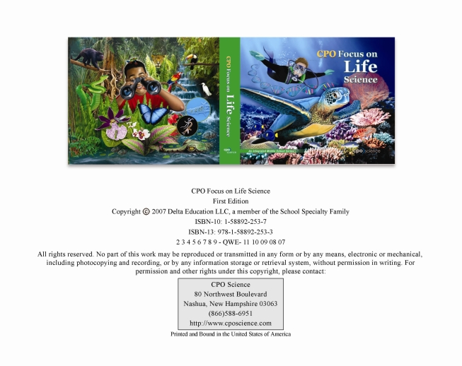
Page ii from CPO Focus on Life Science (1-58892-253-7) by CPO Science
Sample Code:
(Show/Hide)
<p>CPO Focus on Life Science</p>
<p>First Edition</p>
<p>Copyright © 2007 Delta Education LLC, a member of the School
Specialty Family</p>
<p>ISBN-10: 1-58892-253-7</p>
<p>ISBN-13: 978-1-58892-253-3</p>
<p>2 3 4 5 6 7 8 9 - QWE- 11 10 09 08 07</p>
<p>All rights reserved. No part of this work may be reproduced or
transmitted in any form or by any means, electronic or mechanical,
including photocopying and recording, or by any information storage
or retrieval system, without permission in writing. For permission
and other rights under this copyright, please contact:</p>
<address>
<line>CPO Science</line>
<line>80 Northwest Boulevard</line>
<line>Nashua, New Hampshire 03063</line>
<line>(866)588-6951</line>
<line><a href="http://www.cposcience.com" external="true">http://www.cposcience.com</a></line>
</address>
<p>Printed and Bound in the United States of America</p>
Illustrated Example 2
Page Sample:
(Show/Hide)
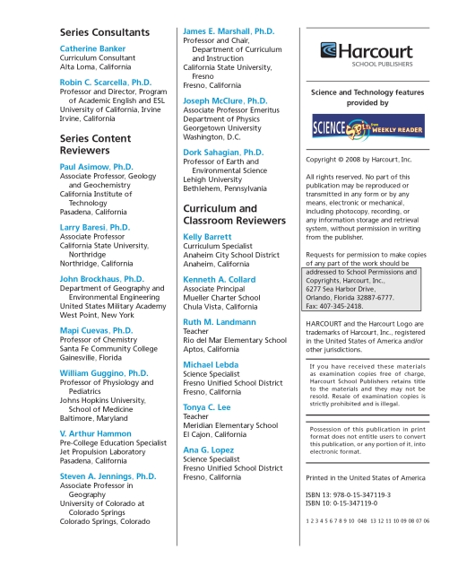
Page iii from California Science Gr3 (0-15-347119-0) by Harcourt School Publishers
Sample Code:
(Show/Hide)
<pagenum id="iii" page="front">iii</pagenum>
<level2>
<h2>Series Consultants</h2>
<list type="pl">
<li><strong>Catherine Banker</strong>
<list type="pl">
<li>Curriculum Consultant</li>
<li>Alta Loma, California</li>
</list>
</li>
<li><strong>Robin C. Scarcella, Ph.D.</strong>
<list type="pl">
<li>Professor and Director, Program of Academic English
and ESL</li>
<li>University of California, Irvine</li>
<li>Irvine, California</li>
</list>
</li>
</list>
</level2>
<level2>
<h2>Series Content Reviewers</h2>
<list type="pl">
<li><strong>Paul Asimow, Ph.D.</strong>
<list type="pl">
<li>Associate Professor, Geology and Geochemistry</li>
<li>California Institute of Technology</li>
<li>Pasadena, California</li>
</list>
</li>
<li><strong>Larry Baresi, Ph.D.</strong>
<list type="pl">
<li>Associate Professor</li>
<li>California State University, Northridge</li>
<li>Northridge, California</li>
</list>
</li>
<li><strong>John Brockhaus, Ph.D.</strong>
<list type="pl">
<li>Department of Geography and Environmental
Engineering</li>
<li>United States Military Academy</li>
<li>West Point, New York</li>
</list>
</li>
<li><strong>Mapi Cuevas, Ph.D.</strong>
<list type="pl">
<li>Professor of Chemistry</li>
<li>Santa Fe Community College</li>
<li>Gainesville, Florida</li>
</list>
</li>
<li><strong>Willian Guggino Ph.D.</strong>
<list type="pl">
<li>Professor of Physiology and Pediatrics</li>
<li>Johns Hopkins University, School of Medicine</li>
<li>Baltimore, Maryland</li>
</list>
</li>
<li><strong>V. Arthur Hammon</strong>
<list type="pl">
<li>Pre-College Education Specialist</li>
<li>Jet Propulsion Laboratory</li>
<li>Pasadena, California</li>
</list>
</li>
<li><strong>Steven A. Jennings, Ph.D.</strong>
<list type="pl">
<li>Associate Professor in Geography</li>
<li>University of Colorado at Colorado Springs</li>
<li>Colorado Springs, Colorado</li>
</list>
</li>
<li><strong>James E. Marshall, Ph.D.</strong>
<list type="pl">
<li>Professor and Chair, Department of Curriculum and
Instruction</li>
<li>California State University, Fresno</li>
<li>Fresno, California</li>
</list>
</li>
<li><strong>Joseph McClure, Ph.D.</strong>
<list type="pl">
<li>Associate Professor Emeritus</li>
<li>Department of Physics</li>
<li>Georgetown University</li>
<li>Washington, D.C.</li>
</list>
</li>
<li><strong>Dork Sahagian, Ph.D.</strong>
<list type="pl">
<li>Professor of Earth and Environmental Science</li>
<li>Lehigh University</li>
<li>Bethlehem, Pennsylvania</li>
</list>
</li>
</list>
</level2>
<level2>
<h2>Curriculum and Classroom Reviewers</h2>
<list type="pl">
<li><strong>Kelly Barrett</strong>
<list type="pl">
<li>Curriculum Specialist</li>
<li>Anaheim City School District</li>
<li>Anaheim, California</li>
</list>
</li>
<li><strong>Kenneth A. Collard</strong>
<list type="pl">
<li>Associate Principal</li>
<li>Mueller Charter School</li>
<li>Chula Vista, California</li>
</list>
</li>
<li><strong>Ruth M. Landmann</strong>
<list type="pl">
<li>Teacher</li>
<li>Rio del Mar Elementary School</li>
<li>Aptos, California</li>
</list>
</li>
<li><strong>Michael Lebda</strong>
<list type="pl">
<li>Science Specialist</li>
<li>Fresno Unified School District</li>
<li>Fresno, California</li>
</list>
</li>
<li><strong>Tonya C. Lee</strong>
<list type="pl">
<li>Teacher</li>
<li>Meridian Elementary School</li>
<li>El Cajon, California</li>
</list>
</li>
<li><strong>Ana G. Lopez</strong>
<list type="pl">
<li>Science Specialist</li>
<li>Fresno Unified School District</li>
<li>Fresno, California</li>
</list>
</li>
</list>
<p><strong>Harcourt</strong>School Publishers</p>
<p><strong>Science and Technology features provided by:</strong></p>
<p>Science Spin from Weekly Reader</p>
<p>Copyright © 2008 by Harcourt, Inc.</p>
<p>All rights reserved. No part of this publication may be reproduced or
transmitted in any form or by any means, electronic or mechanical,
including photocopy, recording, or any information storage and
retrieval system, without permission in writing from the
publisher.</p>
<p>Requests for permission to make copies of any part of the work
should be addressed to</p>
<address>
<line>School Permissions and Copyrights, Harcourt, Inc.</line>
<line>6277 Sea Harbor Drive,</line>
<line>Orlando, Florida 32887-6777</line>
<line>Fax: 407-345-2418</line>
</address>
<p>Harcourt and the Harcourt Logo are trademarks of Harcourt, Inc.,
registered in the United States of America and/or other
jurisdictions.</p>
<p>If you have received these materials as examination copies free of
charge, Harcourt School Publishers retains title to the materials
and they may not be resold. Resale of examination copies is
strictly prohibited and is illegal.</p>
<p>Possession of this publication in print format does not
entitle users to convert this publication, or any portion of it,
into electronic format.</p>
<p>Printed in the United States of America</p>
<p>ISBN 13: 978-0-15-347119-3</p>
<p>ISBN 10: 0-15-347119-0</p>
<p>1 2 3 4 5 6 7 8 9 10 048 13 12 11 10 09 08 07 06</p>
</level2>
Information Object: Author
Definition
Identifies the writer of a work other than the author of the entire dtbook. Contrast with <docauthor>, which identifies the author of the dtbook, and with <byline>, which contains information beyond an author's name. <author> typically occurs within <blockquote> or <cite>. Only an author's name should be contained within <author> tags.
Markup
Use the <author> tag to indicate the writer of each poem, story, play, chapter, etc. in works where each segment was separately authored. Use it also to indicate the source of a quotation where only the author is given. If a complete citation for a quotation is given, use <cite> rather than <author>. Within a list of authors, use line breaks (<br />) for formatting where needed. The <docauthor> tag however, is used to indicate the author of the entire book.
Syntax
<author>..</author>
Examples
Example 1 - Author of Chapter
<level1 class="chapter">
<h1>Chapter 2: Reading Aids and Devices</h1>
<author>Leslie L. Clark</author>
<!-- ... -->
</level1>
Example 2 - Author of a Quotation
<blockquote>
<p>It is a certainty that the free market will always generate greater
wealth for the main players than will a planned economy. The question is,
at what cost?</p>
<author>Virginia Hamilton Anderson</author>
</blockquote>
Illustrated Example 1
Page Sample:
(Show/Hide)
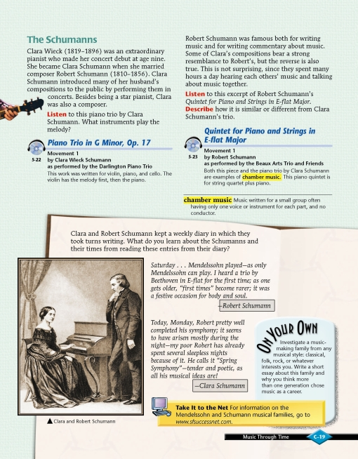
Page C-19 from Making Music Grade 8 (0-382-36576-3) by Pearson Scott Foresman
Sample Code:
(Show/Hide)
<level3>
<pagenum id="IDAIR1Q">C-19</pagenum>
<h3>The Schumanns</h3>
<p>Clara Wieck (1819-1896) was an extraordinary pianist who made
her concert debut at age nine. She became Clara Schumann when
she married composer Robert Schumann (1810-1856). Clara
Schumann introduced many of her husband's compositions to the
public by performing them in concerts. Besides being a star
pianist, Clara was also a composer.</p>
<sidebar render="optional">
<p><strong>Listen</strong> to this piano trio by Clara
Schumann. What instruments play the melody?</p>
<img src="images/thruout/cdhp.jpg" alt="CD Icon" width="38"
height="30"/>
<hd>5-22 <em>Trio in G Minor, Op. 17</em></hd>
<p><strong>Movement 1 <br />
by Clara Wieck Schumann <br />
as performed by the Darlington Piano Trio</strong></p>
<p>This work was written for violin, piano, and cello. The
violin has the melody first, then the piano.</p>
</sidebar>
<p>Robert Schumann was famous both for writing music and for
writing commentary about music. Some of Clara's compositions
bear a strong resemblance to Robert's, but the reverse is
also true. This is not surprising, since they spent many
hours a day hearing each others' music and talking about music
together.</p>
<sidebar render="optional">
<p><strong>Listen</strong> to this excerpt of Robert Schumann's
<em>Quintet for Piano and Strings in E-flat Major.</em></p>
<p><strong>Describe</strong> how it is similar or different
from Clara Schumann's Trio.</p>
<img src="images/thruout/cdhp.jpg" alt="CD Icon" width="38"
height="30"/>
<hd>5-23 <em>Quintet for Piano and Strings in E-flat Major
</em></hd>
<p><strong>Movement 1 <br />
by Robert Schumann <br />
as performed by the Beaux Arts Trio and Friends</strong></p>
<p>Both this piece and the piano trio by Clara Schumann are
examples of <em>chamber music</em>. This piano quintet is
for string quartet plus piano.</p>
</sidebar>
<sidebar render="optional">
<dl>
<dt>chamber music</dt>
<dd>Music written for a small group often having only one
voice or instrument for each part, and no conductor.
</dd>
</dl>
</sidebar>
<sidebar render="optional">
<p>Clara and Robert Schumann kept a weekly diary in which they
took turns writing. What do you learn about the Schumanns
and their times from reading these entries from their
diary?</p>
<blockquote>
<p>Saturday . . . Mendelssohn played--as only Mendelssohn
can play. I heard a trio by Beethoven in E-flat for
the first time; as one gets older, "first times" become
rarer; it was a festive occasion for body and soul.</p>
<author>Robert Schumann</author>
</blockquote>
<blockquote>
<p>Today, Monday, Robert pretty well completed his
symphony; it seems to have arisen mostly during the
night--my poor Robert has already spent several
sleepless nights because of it. He calls it "Spring
Symphony"--tender and poetic, as all his musical ideas
are!</p>
<author>Clara Schumann</author>
</blockquote>
<imggroup>
<img src="images/U06C08/pC19-001.jpg" alt="Photograph of
Clara and Robert Schumann" width="209" height="261"/>
<caption>Clara and Robert Schumann</caption>
</imggroup>
</sidebar>
<sidebar render="optional">
<hd>On Your Own</hd>
<p>Investigate a music making family from any musical style:
classical, folk, rock, or whatever interests you. Write a
short essay about this family and why you think more than
one generation chose music as a career.</p>
</sidebar>
<sidebar render="optional">
<img src="images/thruout/computer.jpg" alt="Computer Icon"
width="38" height="30"/>
<hd>Take It to the Net</hd>
<p>For information on the Mendelssohn and Schumann musical
families, go to <a href="http://www.sfsuccessnet.com"
external="true">www.sfsuccessnet.com.</a></p>
</sidebar>
<!-- ... -->
</level3>
Illustrated Example 2
Page Sample:
(Show/Hide)
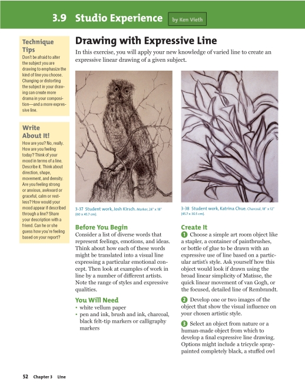
Page 54 from The Visual Experience (0-382-36576-3) by Davis
Sample Code:
(Show/Hide)
<level3>
<pagenum id="IDATMLN">52</pagenum>
<h3>3.9 Studio Experience </h3>
<p>by</p> <author>Ken Vieth</author>
<level4>
<h4>Drawing with Expressive Line</h4>
<p>In this exercise, you will apply your new knowledge of
varied line to create an expressive linear drawing of a
given subject.</p>
<imggroup>
<img src="images/U08C01/p052-001.jpg" alt="Josh Kirsch,
Marker drawing" width="198" height="269"/>
<caption>3-37 Student work, Josh Kirsch. Marker, 24" x 18"
(60 x 45.7 cm).</caption>
</imggroup>
<imggroup>
<img src="images/U08C01/p052-002.jpg" alt="Katrina Chue,
Charcoal drawing" width="198" height="269"/>
<caption>3-38 Student work, Katrina Chue. Charcoal, 18" x
12" (45.7 x 30.5 cm).</caption>
</imggroup>
<level5>
<h5>Before You Begin</h5>
<p>Consider a list of diverse words that represent
feelings, emotions, and ideas. Think about how each
of these words might be translated into a visual line
expressing a particular emotional concept. Then look
at examples of work in line by a number of different
artists. Note the range of styles and expressive
qualities.</p>
</level5>
<level5>
<h5>You Will Need</h5>
<list type="ul">
<li>white vellum paper</li>
<li>pen and ink, brush and ink, charcoal, black felt-tip
markers or calligraphy markers</li>
</list>
<sidebar render="optional">
<hd>Technique Tips</hd>
<p>Don't be afraid to alter the subject you are
drawing to emphasize the kind of line you
choose. Changing or distorting the subject in
your drawing can create more drama in your
composition--and a more expressive line.</p>
</sidebar>
</level5>
<level5>
<h5>Create It</h5>
<list type="pl">
<li>1. Choose a simple art room object like a stapler,
a container of paintbrushes, or bottle of glue to
be drawn with an expressive use of line based on a
particular artist's style. Ask yourself how this
object would look if drawn using the broad linear
simplicity of Matisse, the quick linear movement
of van Gogh, or the focused, detailed line of
Rembrandt. </li>
<li>2. Develop one or two images of the object that
show the visual influence on your chosen artistic
style. </li>
<li>3. Select an object from nature or a human-made
object from which to develop a final expressive
line drawing. Options might include a tricycle
spraypainted completely black, a stuffed owl</li>
</list>
<sidebar render="optional">
<hd>Write About It!</hd>
<p>How are you? No, really. How are you feeling today?
Think of your mood in terms of a line. Describe
it. Think about direction, shape, movement, and
density. Are you feeling strong or anxious,
awkward or graceful, calm or restless? How would
your mood appear if described through a line?
Share your description with a friend. Can he or
she guess how you're feeling based on your
report?</p>
</sidebar>
<!-- ... -->
</level5>
</level4>
</level3>
New in the 2005 release of the DAISY Standard
Information Object: Bridgehead
Definition
Bridgehead can be used when a print book contains headings that are clearly not a part of the document hierarchy and, similarly, in the DTB would not be a part of the global navigation. Some documents, textbooks for example, use headings that are not tied to the normal sectional hieararchy.
Markup
The <bridgehead> tag is used to mark up a "free-floating" heading that is not associated with the hierarchical structure of a document. It must be contained within one of the level or div elements. While <hd> and <h1> ... <h6> are restricted to one occurrence per <level> or <level1> ... <level6>, respectively, <bridgehead> has no such restriction. It should however be used only when it is clear that none of the structural headings is appropriate.
<div> may contain bridgehead.
Syntax
<bridgehead>..</bridgehead>
Examples
Example 1
<level2 class="chapter">
<h2>Chapter 3: The Mission</h2>
<bridgehead>Arriving by sea</bridgehead>
...
<bridgehead>Arriving by land</bridgehead>
...
</level2>
Illustrated Example 1
Page Sample:
(Show/Hide)
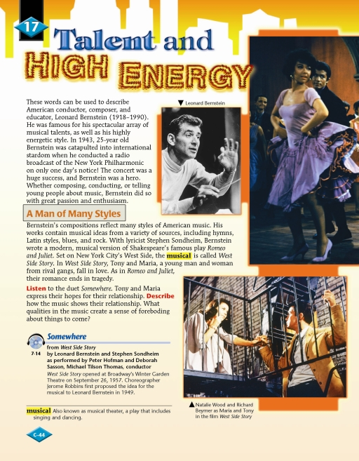
Page C-44 from Making Music Grade 8 (0-382-36576-3) by Pearson Scott Foresman
Sample Code:
(Show/Hide)
<level2>
<pagenum id="IDA4Q5Q">C-44</pagenum>
<h2>17 Talent and High Energy</h2>
<p>These words can be used to describe American conductor, composer,
and educator, Leonard Bernstein (1918-1990). He was famous for
his spectacular array of musical talents, as well as his highly
energetic style. In 1943, 25-year old Bernstein was catapulted
into international stardom when he conducted a radio broadcast of
the New York Philharmonic on only one day's notice! The concert
was a huge success, and Bernstein was a hero. Whether composing,
conducting, or telling young people about music, Bernstein did
so with great passion and enthusiasm.</p>
<imggroup>
<caption>Leonard Bernstein</caption>
<img src="images/U06C17/pC44-001.jpg" alt="Photograph of
Leonard Bernstein" width="136" height="183"/>
</imggroup>
<bridgehead>A Man of Many Styles</bridgehead>
<p>Bernstein's compositions reflect many styles of American music.
His works contain musical ideas from a variety of sources,
including hymns, Latin styles, blues, and rock. With lyricist
Stephen Sondheim, Bernstein wrote a modern, musical version
of Shakespeare's famous play <cite>Romeo and Juliet.</cite> Set on
New York City's West Side, the <annoref idref="#c44musical">musical</annoref> is called
<cite>West Side Story.</cite> In <em>West Side Story,</em> Tony
and Maria, a young man and woman from rival gangs, fall in
love. As in <em>Romeo and Juliet,</em> their romance ends in
tragedy.</p>
<p><strong>Listen</strong> to the duet <em>Somewhere.</em> Tony
and Maria express their hopes for their relationship.
<strong>Describe </strong>how the music shows their
relationship. What qualities in the music create a sense of
foreboding about things to come?</p>
<sidebar render="optional">
<img src="images/thruout/cdhp.jpg" alt="CD Headphones Icon"
width="38" height="30"/>
<hd>7-14 <em>Somewhere</em></hd>
<p><strong>from <em>West Side Story</em> by Leonard Bernstein
and Stephen Sondheim as performed by Peter Hofman and
Deborah Sasson, Michael Tilson Thomas, conductor</strong></p>
<p><em>West Side Story</em> opened at Broadway's Winter
Garden Theatre on September 26, 1957. Choreographer Jerome
Robbins first proposed the idea for the musical to Leonard
Bernstein in 1949.</p>
</sidebar>
<imggroup>
<img src="images/U06C17/pC44-002.jpg" alt="Photograph of Maria
and Tony from West Side Story" width="278" height="207"/>
<caption>Natalie Wood and Richard Beymer as Maria and Tony in
the film <em>West Side Story</em></caption>
</imggroup>
<annotation id="c44musical">
<dl>
<dt>musical</dt>
<dd>Also known as musical theater, a play that includes
singing and dancing.</dd>
</dl>
</annotation>
<!-- ... -->
</level2>
Illustrated Example 2
Page Sample:
(Show/Hide)
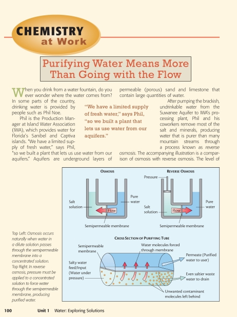
Page 100 from ACS Chemistry (0-7167-8919-1) by ACS ChemCom
Sample Code:
(Show/Hide)
<level3>
<pagenum id="IDACGQN">100</pagenum>
<h3>Chemistry at Work</h3>
<bridgehead>Purifying Water Means More Than Going with the Flow
</bridgehead>
<p>When you drink from a water fountain, do you ever wonder where
the water comes from? In some parts of the country, drinking
water is provided by people such as Phil Noe.</p>
<p>Phil is the production Manager at Island Water Association
(IWA), which provides water for Florida's Sanibel and Captiva
Islands. "We have a limited supply of fresh water," says Phil,
"so we built a plant that lets us use water from our aquifers."
Aquifers are underground layers of permeable (porous) sand and
limestone that contain large amounts of water.</p>
<imggroup>
<img src="images/p100-001.jpg" alt="Osmosis, Reverse Osmosis
and a Cross Section of Purifying Tube" width="490"
height="417" id="p100-001" />
<caption imgref="p100-001"><em>Top Left:</em> Osmosis occurs naturally
when water in a dilute solution passes through the semipermeable
membrane into a concentrated solution. <em>Top Right:</em>
In reverse osmosis, pressure must be applied to a
concentrated solution to force water through the
semipermeable membrane, producing purified water.</caption>
<prodnote imgref="p100-001" render="optional">The image illustrates
osmosis, with flow indicated from the pure water through a
semipermeable membrane to the salt solution. Reverse osmosis
indicates flow from the salt solution through the semipermeable
membrane to the pure water.</prodnote>
</imggroup>
<p>After pumping the brackish, undrinkable water from the Suwanee
Aquifer to IWA's processing plant, Phil and his coworkers
remove most of the salt and minerals, producing water that is
purer than many mountain streams through a process known as
<em>reverse osmosis</em>. The accompanying illustration is a
comparison of osmosis with reverse osmosis. The level of </p>
<!-- ... -->
</level3>
Information Object: Byline
New in the 2005 release of the DAISY Standard
Definition
A byline contains information about the creator of or contributor to a work, usually consisting of more than just an author's name. In cases where more than a name appears, or where that is commonly the case (even if only a name is present), use <byline>. A byline may not contain a name at all. See also <author>.
Markup
The <byline> element can appear in a block context, and in elements such as <poem> and <linegroup>. It may contain any inline elements.
Syntax
<byline>...</byline>
Examples
Example 1
<div class="article">
<byline>Associated Press</byline>
</div>
<div class="article">
<byline>Lois Lane, staff contributor</byline>
</div>
Illustrated Example 1
Page Sample:
(Show/Hide)
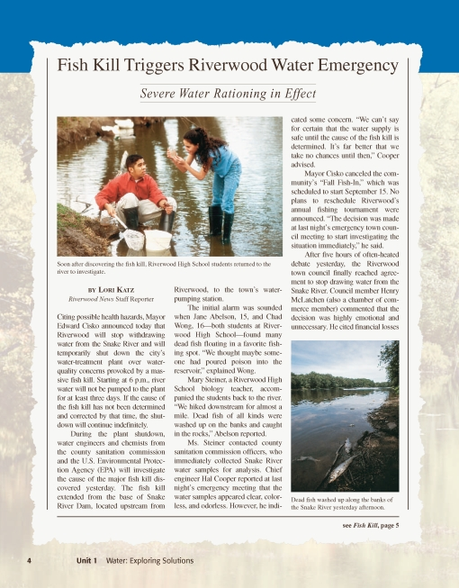
Page 4 from Chemistry in the Community (0-71678919-1) by American Chemical Society
Sample Code:
(Show/Hide)
<level2>
<pagenum id="IDAPCGN">4</pagenum>
<h2>Fish Kill Triggers Riverwood Water Emergency</h2>
<bridgehead>Severe Water Rationing in Effect</bridgehead>
<imggroup>
<img id="i004-001" src="images/p004-001.png" alt="Riverwood
High School students investigating" width="399" height="265"/>
<prodnote imgref="i004-001" render="optional">Two students
investigating the fish kill.</prodnote>
<caption imgref="i004-001">Soon after discovering the fish kill, Riverwood High
School students returned to the river to
investigate.</caption>
</imggroup>
<byline>By Lori Katz, <em>Riverwood News</em> Staff Reporter</byline>
<p>Citing possible health hazards, Mayor Edward Cisko announced
today that Riverwood will stop withdrawing water from the
Snake River and will temporarily shut down the city's water-
treatment plant over water-quality concerns provoked by a
massive fish kill. Starting at 6 p.m., river water will not
be pumped to the plant for at least three days. If the cause
of the fish kill has not been determined and corrected by
that time, the shutdown will continue indefinitely.</p>
<p>During the plant shutdown, water engineers and chemists from
the county sanitation commission and the U.S. Environmental
Protection Agency (EPA) will investigate the cause of the
major fish kill discovered yesterday. The fish kill extended
from the base of Snake River Dam, located upstream from
Riverwood, to the town's water-pumping station.</p>
<p>The initial alarm was sounded when Jane Abelson, 15, and Chad
Wong, 16-both students at Riverwood High School-found many
dead fish floating in a favorite fishing spot. "We thought
maybe someone had poured poison into the reservoir,"
explained Wong.</p>
<p>Mary Steiner, a Riverwood High School biology teacher,
accompanied the students back to the river. "We hiked
downstream for almost a mile. Dead fish of all kinds were
washed up on the banks and caught in the rocks," Abelson
reported.</p>
<p>Ms. Steiner contacted county sanitation commission officers,
who immediately collected Snake River water samples for
analysis. Chief engineer Hal Cooper reported at last night's
emergency meeting that the water samples appeared clear,
colorless, and odorless. However, he indicated some concern.
"We can't say for certain that the water supply is safe until
the cause of the fish kill is determined. It's far better
that we take no chances until then," Cooper advised.</p>
<p>Mayor Cisko canceled the community's "Fall Fish-In," which was
scheduled to start September 15. No plans to reschedule
Riverwood's annual fishing tournament were announced. "The
decision was made at last night's emergency town council
meeting to start investigating the situation immediately," he
said.</p>
<imggroup>
<img id="i004-002" src="images/p004-002.png" alt="Dead fish
along the banks of the Snake River" width="192" height="268"/>
<prodnote imgref="i004-002" render="optional">Dead fish along
the banks of the Snake River.</prodnote>
<caption imgref="i004-002">Dead fish washed up along the banks of the Snake
River yesterday afternoon.</caption>
</imggroup>
<p>After five hours of often-heated debate yesterday, the
Riverwood town council finally reached agreement to stop
drawing water from the Snake River. Council member Henry
McLatchen (also a chamber of commerce member) commented that
the decision was highly emotional and unnecessary. He cited
financial losses </p>
<!-- ... -->
</level2>
Information Object: Computer Code
Definition
Computer code in a computer programming language.
Markup
Computer code, which may be displayed in a print book in a monospaced font such as Courier bold, is marked with the <code> tag. This tag can be used in either block or inline settings.
Syntax
<code>...</code>
Examples
Example 1
<p>This is an example of drawing and rotating a square using the "o" key.</p>
<code>
case "o":
glBegin(GL_QUAD_STRIP)
for(i=0;i<=12; i++) {
angle = 3.14159 / 6.0 * i;
glVertex2f(0.4 * cos(angle), 0.4 * sin(angle));
glVertex2f(0.5 * cos(angle), 0.5 * sin(angle));
}
glEnd();
break;
</code>
See also Information Object: Keyboard Input and Information Object: Sample
Playback devices can be configured so that text tagged as <code> will preserve all white space (line breaks, indentation, etc.).
Information Object: Dateline
New in the 2005 release of the DAISY Standard
Definition
A dateline contains information about the time and/or place at which a work was authored.
Markup
A dateline can appear in a block context, and in elements such as <poem> and <linegroup>. It may contain any inline elements.
Syntax
<dateline>...</dateline>
Examples
Example 1
<div class="article">
<dateline>August 25, 2005</dateline>
<p>...</p>
</div>
Illustrated Example 1
Page Sample:
(Show/Hide)
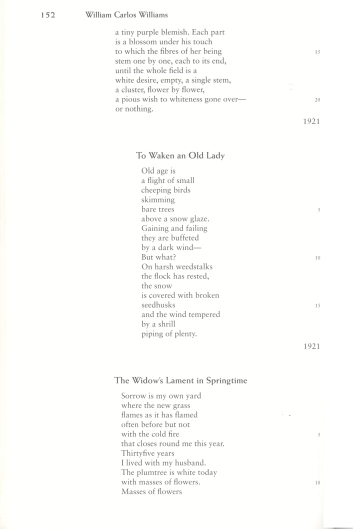
Page 152 from Twentieth-Century American Poetry (0-07-142779-1) by McGraw-Hill
Sample Code:
(Show/Hide)
<poem>
<linegroup>
<!-- ... -->
<pagenum id="IDALAKP">152</pagenum>
<line><linenum>13</linenum> a tiny purple blemish. Each part
</line>
<line><linenum>14</linenum> is a blossom under his touch
</line>
<line><linenum>15</linenum> to which the fibres of her being
</line>
<line><linenum>16</linenum> stem one by one, each to its end,
</line>
<line><linenum>17</linenum> until the whole field is a</line>
<line><linenum>18</linenum> white desire, empty, a single
stem,</line>
<line><linenum>19</linenum> a cluster, flower by flower,
</line>
<line><linenum>20</linenum> a pious wish to whiteness gone
over-</line>
<line><linenum>21</linenum> or nothing</line>
</linegroup>
<dateline>1921</dateline>
</poem>
<poem>
<hd>To Waken an Old Lady</hd>
<linegroup>
<line><linenum>1</linenum> Old age is</line>
<line><linenum>2</linenum> a flight of small</line>
<line><linenum>3</linenum> cheeping birds</line>
<line><linenum>4</linenum> skimming</line>
<line><linenum>5</linenum> bare trees</line>
<line><linenum>6</linenum> above a snow glaze.</line>
<line><linenum>7</linenum> Gaining and failing</line>
<line><linenum>8</linenum> they are buffeted</line>
<line><linenum>9</linenum> by a dark wind-</line>
<line><linenum>10</linenum> But what?</line>
<line><linenum>11</linenum> On harsh weedstalks</line>
<line><linenum>12</linenum> the flock has rested,</line>
<line><linenum>13</linenum> the snow</line>
<line><linenum>14</linenum> is covered with broken</line>
<line><linenum>15</linenum> seedhusks</line>
<line><linenum>16</linenum> and the wind tempered</line>
<line><linenum>17</linenum> by a shrill</line>
<line><linenum>18</linenum> piping of plenty.</line>
</linegroup>
<dateline>1921</dateline>
</poem>
<poem>
<hd>The Widow's Lament in Springtime</hd>
<linegroup>
<line><linenum>1</linenum> Sorrow is my own yard</line>
<line><linenum>2</linenum> where the new grass</line>
<line><linenum>3</linenum> flames as it has flamed</line>
<line><linenum>4</linenum> often before but not</line>
<line><linenum>5</linenum> with the cold fire</line>
<line><linenum>6</linenum> that closes round me this year.
</line>
<line><linenum>7</linenum> Thirtyfive years</line>
<line><linenum>8</linenum> I lived with my husband.</line>
<line><linenum>9</linenum> The plumtree is white today</line>
<line><linenum>10</linenum> with masses of flowers.</line>
<line><linenum>11</linenum> Masses of flowers</line>
<!-- ... -->
</linegroup>
</poem>
Information Object: Epigraph
New in the 2005 release of the DAISY Standard
Definition
An epigraph marks a quotation placed at the beginning of a publication.
Markup
The <epigraph> element may contain any inline or block level element, except for images and image groups.
Syntax
<epigraph>
<p>...</p>
<linegroup>...</linegroup>
<div>...</div>
<line>...</line>
...
</epigraph>
Examples
Example 1
<epigraph>
<linegroup>
<line>In Memory of</line>
<line>my loving Mother</line>
</linegroup>
</epigraph>
Illustrated Example 1
Page Sample:
(Show/Hide)
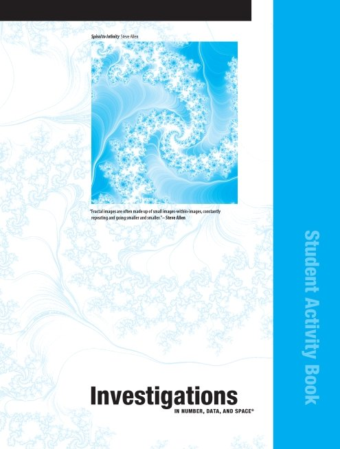
Title page from Number, Data, and Space Student Activity Book (0-328-30991-5) by Pearson Scott Foresman
Sample Code:
(Show/Hide)
<level1>
<pagenum id="IDAVBKP"></pagenum>
<h1>Investigations In Number, Data, And Space <sup>®</sup></h1>
<p>Student Activity Book</p>
<imggroup>
<caption><strong><em>Spiral to Infinity</em></strong> Steve
Allen</caption>
<img src="images/thruout/spi2in.png" height="285" width="257"
alt="Spiral to Infinity"/>
</imggroup>
<epigraph>
<p><q>"Fractal images are often made up of small images-within-
images, constantly repeating and going smaller and
smaller."</q>- Steve Allen</p>
</epigraph>
</level1>
Information Object: Keyboard Input
Definition
Information that the reader of the book is to input directly into a computer using the keyboard.
Markup
Content that is to be entered into a computer via a keyboard is to be marked with the <kbd> tag. This tag can be used in either block or inline settings.
Syntax
<kbd>...</kbd>
Examples
Example 1
<p>To add a filename parameter to the DIR command, you can type the following text.</p>
<kbd>DIR C: MYFILE.TXT</kbd>
<p>In symbolic notation, MYFILE.TXT would be shown as filename.ext.</p>
See also Information Object: Computer Code and Information Object: Sample
Playback devices can be configured so that text tagged as <kbd> will preserve all white space (line breaks, indentation, etc.).
Illustrated Example 1
Page Sample:
(Show/Hide)

Page 5 from Advanced Programming in the UNIX Environment (0-201-56317-7) by Addison-Wesley
Sample Code:
(Show/Hide)
<pagenum id="igubjk">5</pagenum>
<p>Program 1.1 just prints the name of every file in a directory, and
nothing else. If the source file is named myls.c, we compile it
into the default a.out executable file by </p>
<kbd>cc myls.c</kbd>
<p>Some sample output is</p>
<samp class="output">
$ <strong>a.out /dev</strong><br/>
.<br/>
..<br/>
MAKEDEV<br/>
console<br/>
tty<br/>
mem<br/>
kmem<br/>
null<br/>
</samp>
<p><em>many more lines that aren't shown</em></p>
<samp class="output">
printer<br/>
$ <span class="input">a.out /var/spool/mqueue</span><br/>
can't open /var/spool/mqueue: Permission denied<br/>
$ <span class="input">a.out /dev/tty</span><br/>
can't open /dev/tty: Not a directory<br/>
</samp>
<p>Throughout this text we'll show commands that we enter and the
resulting output in this fashion: characters that we enter are
shown in <span class="input">this font</span> while output from
programs is shown <span class="output">like this</span>. If we
need to add comments to this output we'll show the comments in
<em>italics</em>. The dollar sign that precedes our input is the
prompt that is printed by the shell. We'll always show the shell
prompt as a dollar sign.</p>
<p>Note that the directory listing is not in alphabetical order. The
ordering that we are familiar with is done by the <kbd>ls</kbd>
command itself.</p>
<p>There are many details to consider in this 20-line program:</p>
<list type="ul">
<li>First, we include a header of our own, <span class="mono">
ourhdr.h</span>. We include this header in almost every
program in this text. It includes some standard system headers
and defines numerous constants and function prototypes that
we use throughout the examples in the text. A listing of this
header is in Appendix B. </li>
<li>The declaration of the main function uses the new style
supported by the ANSI C standard. (We'll have more to say
about the ANSI C standard in the next chapter.)</li>
<li>We take an argument from the command line, <span class="mono">
argv[1]</span>, as the name of the directory to list. In
Chapter 7 we'll look at how the <span class="mono">main</span>
function is called, and how the command-line arguments and
environment variables are accessible to the program. </li>
<li>Since the actual format of directory entries varies from one
Unix system to another, we use the functions <span
class="mono">opendir, readdir</span>, and <span class="mono">
closedir</span> to manipulate the directory.</li>
<li>The <span class="mono">opendir</span> function returns a
pointer to a <span class="mono">DIR</span> structure, and we
pass this pointer to the <span class="mono">readdir</span>
function. We don't care what's in the <span class="mono">DIR
</span> structure. We then call <span class="mono">readdir
</span> in a loop, to read each directory entry. It returns a
pointer to a <span class="mono">dirent</span> structure, or a
null pointer when it's finished with the directory. All we
examine in</li>
</list>
Information Object: Linegroup
New in the 2005 release of the DAISY Standard
Definition
A linegroup wraps a set of lines.
Markup
The <linegroup> tags are useful if it is important to maintain the line formatting in the DTB, for example, a stanza in a poem. The <line> tags wrap each individual line within the <linegroup>.
Syntax
<linegroup>
<hd>...</hd>
<dateline>...</dateline>
<byline>...</byline>
<epigraph>...</epigraph>
<linegroup>...</linegroup>
<line>...</line>
<pagenum>...</pagenum>
<prodnote>...</prodnote>
<noteref>...</noteref>
<annoref>...</annoref>
<note>...</note>
<annotation>...</annotation>
<p>...</p>
<blockquote>...</blockquote>
<img>...</img>
<imggroup>...</imggroup>
</linegroup>
Examples
Example 1
<linegroup>
<line>With Annie gone,</line>
<line>With eyes to compare</line>
<line>With the morning sun?</line>
</linegroup>
<cite>From <title>For Anne</title></cite>
<byline>Leonard Cohen: poet, novelist, songwriter, singer</byline>
See also Information Object: Poem.
Illustrated Example 1
Page Sample:
(Show/Hide)
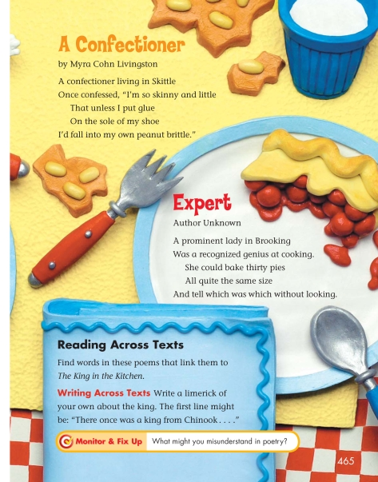
Page 465 from Reading Street (0-328-10839-1) by Pearson Scott Foresman
Sample Code:
(Show/Hide)
<pagenum id="id4702574">465</pagenum>
<poem>
<hd>A Confectioner</hd>
<author>by Myra Cohn Livingston</author>
<linegroup>
<line>A confectioner living in Skittle</line>
<line>Once confessed, "I'm so skinny and little</line>
<line>That unless I put glue</line>
<line>On the sole of my shoe</line>
<line>I'd fall into my own peanut brittle."</line>
</linegroup>
</poem>
<poem>
<hd>Expert</hd>
<author>Author Unknown</author>
<linegroup>
<line>A prominent lady in Brooking</line>
<line>Was a recognized genius at cooking.</line>
<line>She could bake thirty pies</line>
<line>All quite the same size</line>
<line>And tell which was which without looking.</line>
</linegroup>
</poem>
<level3>
<h3>Reading Across Texts</h3>
<p>Find words in these poems that link them to <em>The King in
the Kitchen</em>.</p>
<level4>
<h4>Writing Across Texts</h4>
<p>Write a limerick of your own about the king. The first line
might be: "There once was a king from Chinook . . . ." </p>
<sidebar render="optional">
<hd>Monitor & Fix Up</hd>
What might you misunderstand in poetry?
</sidebar>
</level4>
</level3>
Illustrated Example 2
Page Sample:
(Show/Hide)
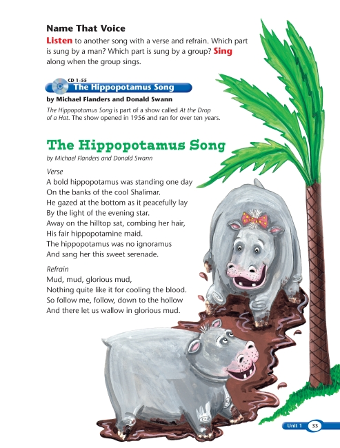
Page 33 from Making Music (0-328-36571-2) by Pearson Scott Foresman
Sample Code:
(Show/Hide)
<level4>
<pagenum id="IDAUBVQ">33</pagenum>
<h4>Name That Voice</h4>
<p><strong>Listen</strong> to another song with a verse and
refrain. Which part is sung by a man? Which part is sung by a
group? <strong>Sing</strong> along when the group sings.</p>
<sidebar render="optional">
<img src="images/thruout/cd.png" alt="CD Icon" width="38"
height="37"/>
<hd>CD 1-55 The Hippopotamus Song</hd>
<byline>by Michael Flanders and Donald Swann</byline>
<p><em>The Hippopotamus Song</em> is part of a show called
<em>At the Drop of a Hat.</em> The show opened in 1956 and
ran for over ten years.</p>
</sidebar>
<poem>
<title>The Hippopotamus Song</title>
<byline>by Michael Flanders and Donald Swann</byline>
<linegroup>
<hd>Verse</hd>
<line>A bold hippopotamus was standing one day</line>
<line>On the banks of the cool Shalimar.</line>
<line>He gazed at the bottom as it peacefully lay</line>
<line>By the light of the evening star.</line>
<line>Away on a hilltop sat, combing her hair,</line>
<line>His fair hippopotamine maid.</line>
<line>The hippopotamus was no ignoramus</line>
<line>And sang her this sweet serenade.</line>
</linegroup>
<linegroup>
<hd>Refrain</hd>
<line>Mud, mud, glorious mud, </line>
<line>Nothing quite like it for cooling the blood.</line>
<line>So follow me, follow, down to the hollow</line>
<line>And there let us wallow in glorious mud.</line>
</linegroup>
</poem>
<!-- ... -->
</level4>
Information Object: Lists
Definition
A list is a sequence of two or more items. For markup purposes, there are four types of lists:
1. Ordered lists: In ordered lists (type="ol"), list items are numbered or lettered. Such lists are most often used for procedures (e.g., a recipe) or sequential lists (e.g., an agenda).
2. Unordered lists: In unordered lists (type="ul"), list items are unnumbered and usually marked with a bullet or other typographical device.
3. Preformatted lists: In preformatted lists (type="pl"), no ennumeration nor bullets are added by the display agent. Bullets or visuals of the producer's choice may be added to the list items.
4. Definition lists: List items generally consist of term/definition pairs (a term followed by its definition).
Markup
Ordered and unordered lists are created using <list> tags. When a list contains a heading, the heading should be included in the list and marked with the <hd> tag. Individual list items in unordered, ordered or preformatted lists are indicated with the <li> tag. If list items consist of two or more discrete segments that should be distinguished, those segments should be marked with the <lic> ("list item component") tag. A common example of the use of <lic> is in a table of contents to separately mark each entry and its corresponding page number. The <lic> tag should only be used when there are two or more segments in each list item. Alternatively, with two or more segments to each list item, it may be more appropriate to mark up the list as a table. See Information Object: Tables. If the information presented contains nesting (see below), this is generally an indication that it should be marked as a list rather than a table.
Definition lists are created using <dl> tags. In addition, definition lists require the <dt> tag to indicate the term being defined, and the <dd> tag to mark the definition.
Nested lists: a list item can also contain within it another list, which may in turn hold another list inside it, and so forth. Such a series of lists is said to be "nested."
Syntax
<list type="..">
<hd>...</hd>
<prodnote>...</prodnote>
<li>
<lic>...</lic>
<lic>...</lic>
</li>
<pagenum>...</pagenum>
<li>
<lic>...</lic>
<lic>...</lic>
</li>
</list>
<dl>
<dt>...</dt>
<dd>...</dd>
</dl>
New in the 2005 release of the DAISY Standard
- The "type" attribute in
<list> is required.
- Preformatted lists:
<list type="pl"> No numbering nor bullets are added for display purposes.
-
Values for the "enum" attribute in
<list> for ordered lists have changed:
- enum='1': integer
- enum='a': lowercase
- enum='A': uppercase
- enum='i': lowercase Roman
- enum='I': uppercase Roman
- The "bullet" attribute of
<list> has been removed.
- The "start" attribute of
<list> indicates the first numeric starting point for the list. The default value is 1. A start value is useful when a list is closed, other elements are presented, and then the list is reopened.
Examples
Example 1: Unordered list
<list type="ul" class="ingredients">
<li>mango</li>
<li>lychee</li>
<li>carambola</li>
<li>rambutan</li>
<li>sugar</li>
<li>lime juice</li>
</list>
Illustrated Example 1
Page Sample:
(Show/Hide)
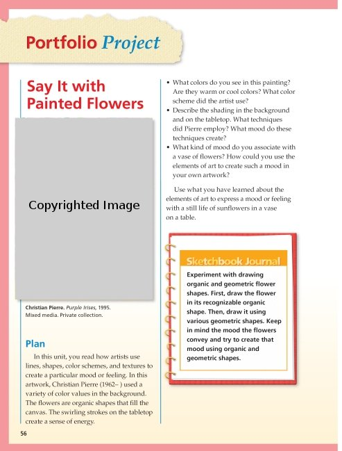
Page 56 from Art (0-328-08038-1) by Pearson Scott Foresman
Sample Code:
(Show/Hide)
<level2>
<pagenum id="IDAQTWQ">56</pagenum>
<h2>Portfolio Project Say It with Painted Flowers</h2>
<imggroup>
<img src="images/U10C13/p056-001.png" alt="Christian Pierre.
Purple Irises, 1995." width="316" height="416"/>
<caption><strong>Christian Pierre.</strong><em>Purple Irises,
</em> 1995. Mixed media. Private collection.</caption>
</imggroup>
<level3>
<h3>Plan</h3>
<p>In this unit, you read how artists use lines, shapes, color
schemes, and textures to create a particular mood or
feeling. In this artwork, Christian Pierre (1962- ) used
a variety of color values in the background. The flowers
are organic shapes that fill the canvas. The swirling
strokes on the tabletop create a sense of energy.</p>
<list type="ul">
<li>What colors do you see in this painting? Are they
warm or cool colors? What color scheme did the artist
use?</li>
<li>Describe the shading in the background and on the
tabletop. What techniques did Pierre employ? What mood
do these techniques create?</li>
<li>What kind of mood do you associate with a vase of
flowers? How could you use the elements of art to
create such a mood in your own artwork?</li>
</list>
<p>Use what you have learned about the elements of art to
express a mood or feeling with a still life of sunflowers
in a vase on a table.</p>
<sidebar render="optional">
<hd>Sketchbook Journal</hd>
<p>Experiment with drawing organic and geometric flower
shapes. First, draw the flower in its recognizable
organic shape. Then, draw it using various geometric
shapes. Keep in mind the mood the flowers convey and
try to create that mood using organic and geometric
shapes.</p>
</sidebar>
</level3>
</level2>
Example 2: Ordered list
<list type="ol" enum="1" class="steps">
<li>peel fruit.</li>
<li>cut fruit in bite sized pieces.</li>
<li>sprinkle fruit with sugar and lime juice to taste.</li>
<li>stir salad.</li>
<li>chill for one hour.</li>
</list>
Illustrated Example 2
Page Sample:
(Show/Hide)
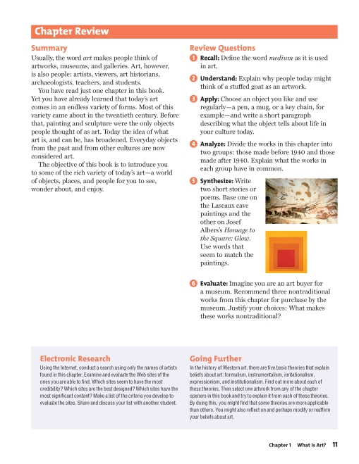
Page 11 from The Visual Experience (0-87192-627-X) by Davis Publications
Sample Code:
(Show/Hide)
<level3>
<pagenum id="IDAPINN">11</pagenum>
<h3>Chapter Review</h3>
<level4>
<h4>Summary</h4>
<p>Usually, the word <em>art</em> makes people think of
artworks, museums, and galleries. Art, however, is also
people: artists, viewers, art historians, archaeologists,
teachers, and students. </p>
<p>You have read just one chapter in this book. Yet you have
already learned that today's art comes in an endless
variety of forms. Most of this variety came about in the
twentieth century. Before that, painting and sculpture
were the only objects people thought of as art. Today the
idea of what art is, and can be, has broadened. Everyday
objects from the past and from other cultures are now
considered art. </p>
<p>The objective of this book is to introduce you to some of
the rich variety of today's art--a world of objects,
places, and people for you to see, wonder about, and
enjoy.</p>
</level4>
<level4>
<h4>Review Questions</h4>
<list type="ol" enum="1">
<li><strong>Recall:</strong> Define the word <em>medium
</em> as it is used in art. </li>
<li><strong>Understand:</strong> Explain why people today
might think of a stuffed goat as an artwork. </li>
<li><strong>Apply:</strong> Choose an object you like and
use regularly--a pen, a mug, or a key chain, for
example--and write a short paragraph describing what
the object tells about life in your culture today.</li>
<li><strong>Analyze:</strong> Divide the works in this
chapter into two groups: those made before 1940 and
those made after 1940. Explain what the works in each
group have in common. </li>
<li><strong>Synthesize:</strong> Write two short stories or poems.
Base one on the Lascaux cave paintings and the other on Josef
Albers's <cite>Homage to the Square: Glow.</cite> Use
words that seem to match the paintings.
<img src="images/p011-001.png" alt="Lascaux cave painting"
width="123" height="78"/>
<img src="images/p011-002.png" alt="Josef Alber's Homage to
the Square: Glow" width="71" height="72"/>
</li>
<li><strong>Evaluate:</strong> Imagine you are an art
buyer for a museum. Recommend three nontraditional
works from this chapter for purchase by the museum.
Justify your choices: What makes these works
nontraditional?</li>
</list>
</level4>
<level4>
<h4>Electronic Research</h4>
<p>Using the Internet, conduct a search using only the names
of artists found in this chapter. Examine and evaluate
the Web sites of the ones you are able to find. Which
sites seem to have the most credibility? Which sites are
the best designed? Which sites have the most significant
content? Make a list of the criteria you develop to
evaluate the sites. Share and discuss your list with
another student.</p>
</level4>
<level4>
<h4>Going Further</h4>
<p>In the history of Western art, there are five basic
theories that explain beliefs about art: formalism,
instrumentalism, imitationalism, expressionism, and
institutionalism. Find out more about each of these
theories. Then select one artwork from any of the chapter
openers in this book and try to explain it from each of
these theories. By doing this, you might find that some
theories are more applicable than others. You might also
reflect on and perhaps modify or reaffirm your beliefs
about art.</p>
</level4>
</level3>
Example 3: Nested preformatted lists, showing use of <hd> tag
<list type="pl">
<hd>Tropical Fruit</hd>
<li>well-known tropical fruit
<list type="pl">
<li>* pineapple</li>
<li>* papaya</li>
</list></li>
<li>exotic tropical fruit
<list type="pl">
<li>* rambutan</li>
<li>* mangosteen</li>
</list></li>
</list>
Illustrated Example 3
Page Sample:
(Show/Hide)
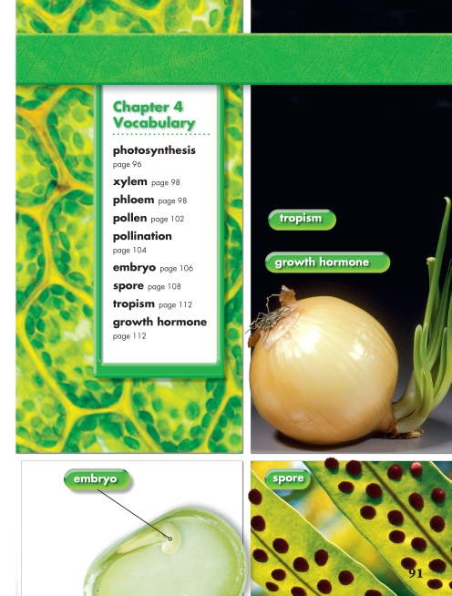
Page 91 from Science (0-328-34506-2) by Pearson Scott Foresman
Sample Code:
(Show/Hide)
<pagenum id="IDAFNUN">91</pagenum>
<list type="pl">
<hd>Chapter 4 Vocabulary</hd>
<li><strong>photosynthesis</strong> page 96 </li>
<li><strong>xylem</strong> page 98 </li>
<li><strong>phloem</strong> page 98 </li>
<li><strong>pollen</strong> page 104 </li>
<li><strong>embryo</strong> page 106 </li>
<li><strong>spore</strong> page 108 </li>
<li><strong>tropism</strong> page 112 </li>
<li><strong>growth hormone</strong> page 112 </li>
</list>
<imggroup>
<caption>tropism</caption>
<caption>growth hormone</caption>
<img src="images/U13C06/p091-001.png" alt="tropism, growth hormone" width="276"
height="372"/>
</imggroup>
<imggroup>
<caption>embryo</caption>
<img src="images/U13C06/p091-002.png" alt="embryo" width="271"
height="189"/>
</imggroup>
<imggroup>
<caption>spore</caption>
<img src="images/U13C06/p091-003.png" alt="spore" width="278"
height="192"/>
</imggroup>
Example 4: Definition List
<dl>
<dt>mango</dt>
<dd>tropical fruit with sweet golden flesh</dd>
<dt>lychee</dt>
<dd>tropical fruit with deep red leathery skin and clear white flesh</dd>
<dt>carambola</dt>
<dd>star shaped tropical fruit with tart lemon-pineapple flavour</dd>
<dt>rambutan</dt>
<dd>egg-shaped tropical fruit similar to lychees with leathery skin covered in soft red hairs</dd>
</dl>
Illustrated Example 4
Page Sample:
(Show/Hide)
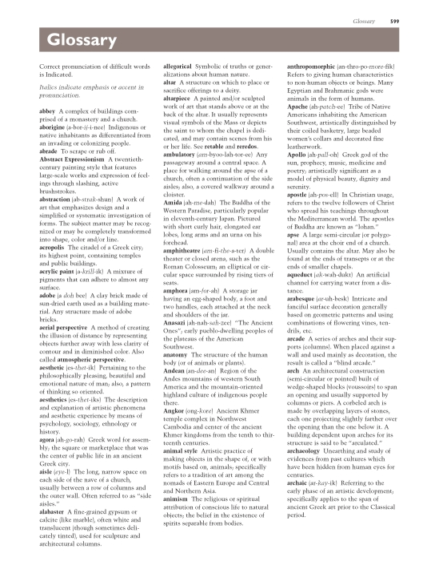
Page 599 from Discovering Art History (0-87192-719-5) by Davis Publications
Sample Code:
(Show/Hide)
<level2>
<pagenum id="IDSAAKLJE">599</pagenum>
<h2>Glossary</h2>
<p>Correct pronunciation of difficult words is Indicated.</p>
<p><em>Italics indicate emphasis or accent in pronunciation.
</em></p>
<dl>
<dt>abbey</dt>
<dd>A complex of buildings comprised of a monastery and a
church.</dd>
<dt>aborigine</dt>
<dd>(a-bor-<em>ij</em>-i-nee) Indigenous or native inhabitants
as differentiated from an invading or colonizing people.
</dd>
<dt>abrade</dt>
<dd>To scrape or rub off.</dd>
<dt>Abstract Expressionism</dt>
<dd>A twentieth-century painting style that features large-
scale works and expression of feelings through slashing,
active brushstrokes.</dd>
<dt>abstraction</dt>
<dd>(ab-<em>strak</em>-shun) A work of art that emphasizes
design and a simplified or systematic investigation of
forms. The subject matter may be recognized or may be
completely transformed into shape, color and/or line.</dd>
<dt>acropolis</dt>
<dd>The citadel of a Greek city; its highest point, containing
temples and public buildings.</dd>
<dt>acrylic paint</dt>
<dd>(a-<em>krill</em>-ik) A mixture of pigments that can
adhere to almost any surface.</dd>
<dt>adobe</dt>
<dd>(a <em>doh</em> bee) A clay brick made of sun-dried earth
used as a building material. Any structure made of adobe
bricks.</dd>
<dt>aerial perspective</dt>
<dd>A method of creating the illusion of distance by
representing objects further away with less clarity of
contour and in diminished color. Also called <strong>
atmospheric perspective.</strong></dd>
<dt>aesthetic</dt>
<dd>(es-<em>thet</em>-ik) Pertaining to the philosophically
pleasing, beautiful and emotional nature of man; also, a
pattern of thinking so oriented.</dd>
<dt>aesthetics</dt>
<dd>(es-<em>thet</em>-iks) The description and explanation of
artistic phenomena and aesthetic experience by means of
psychology, sociology, ethnology or history.</dd>
<dt>agora</dt>
<dd>(ah-<em>go</em>-rah) Greek word for assembly; the square
or marketplace that was the center of public life in an
ancient Greek city.</dd>
<dt>aisle</dt>
<dd>(<em>eye</em>-l) The long, narrow space on each side of
the nave of a church, usually between a row of columns and
the outer wall. Often referred to as "side aisles."</dd>
<dt>alabaster</dt>
<dd>A fine-grained gypsum or calcite (like marble), often
white and translucent (though sometimes delicately
tinted), used for sculpture and architectural columns.</dd>
<dt>allegorical</dt>
<dd>Symbolic of truths or generalizations about human nature.
</dd>
<dt>altar</dt>
<dd>A structure on which to place or sacrifice offerings to a
deity.</dd>
<dt>altarpiece</dt>
<dd>A painted and/or sculpted work of art that stands above or
at the back of the altar. It usually represents visual
symbols of the Mass or depicts the saint to whom the
chapel is dedicated, and may contain scenes from his or
her life. See <strong>retable</strong> and <strong>reredos.
</strong></dd>
<dt>ambulatory</dt>
<dd>(<em>am</em>-byoo-lah-tor-ee) Any passageway around a
central space. A place for walking around the apse of a
church, often a continuation of the side aisles; also, a
covered walkway around a cloister.</dd>
<dt>Amida</dt>
<dd>(ah-<em>me</em>-dah) The Buddha of the Western Paradise,
particularly popular in eleventh-century Japan. Pictured
with short curly hair, elongated ear lobes, long arms and
an urna on his forehead.</dd>
<dt>amphitheatre</dt>
<dd>(<em>am</em>-fi-<em>the</em>-a-ter) A double theater or
closed arena, such as the Roman Colosseum; an elliptical
or circular space surrounded by rising tiers of seats.</dd>
<dt>amphora</dt>
<dd>(am-<em>for</em>-ah) A storage jar having an egg-shaped
body, a foot and two handles, each attached at the neck
and shoulders of the jar.</dd>
<dt>Anasazi</dt>
<dd>(ah-nah-<em>sah</em>-zee) "The Ancient Ones"; early
pueblo-dwelling peoples of the plateaus of the American
Southwest.</dd>
<dt>anatomy</dt>
<dd>The structure of the human body (or of animals or plants).
</dd>
<dt>Andean</dt>
<dd>(an-<em>dee</em>-an) Region of the Andes mountains of
western South America and the mountain-oriented highland
culture of indigenous people there.</dd>
<dt>Angkor</dt>
<dd>(ong-<em>kore</em>) Ancient Khmer temple complex in
Northwest Cambodia and center of the ancient Khmer
kingdoms from the tenth to thirteenth centuries.</dd>
<dt>animal style</dt>
<dd>Artistic practice of making objects in the shape of, or
with motifs based on, animals; specifically refers to a
tradition of art among the nomads of Eastern Europe and
Central and Northern Asia.</dd>
<dt>animism</dt>
<dd>The religious or spiritual attribution of conscious life
to natural objects; the belief in the existence of spirits
separable from bodies.</dd>
<dt>anthropomorphic</dt>
<dd>(an-thro-po-<em>more</em>-fik) Refers to giving human
characteristics to non-human objects or beings. Many
Egyptian and Brahmanic gods were animals in the form of
humans.</dd>
<dt>Apache</dt>
<dd>(ah-<em>patch</em>-ee) Tribe of Native Americans
inhabiting the American Southwest, artistically
distinguished by their coiled basketry, large beaded
women's collars and decorated fine leatherwork.</dd>
<dt>Apollo</dt>
<dd>(ah-<em>pall</em>-oh) Greek god of the sun, prophecy,
music, medicine and poetry; artistically significant as a
model of physical beauty, dignity and serenity.</dd>
<dt>apostle</dt>
<dd>(ah-<em>pos</em>-ell) In Christian usage, refers to the
twelve followers of Christ who spread his teachings
throughout the Mediterranean world. The apostles of Buddha
are known as "lohan."</dd>
<dt>apse</dt>
<dd>A large semi-circular (or polygonal) area at the choir end
of a church. Usually contains the altar. May also be found
at the ends of transepts or at the ends of smaller chapels.
</dd>
<dt>aqueduct</dt>
<dd>(<em>ak</em>-wah-dukt) An artificial channel for carrying
water from a distance.</dd>
<dt>arabesque</dt>
<dd>(<em>ar</em>-uh-besk) Intricate and fanciful surface
decoration generally based on geometric patterns and using
combinations of flowering vines, tendrils, etc.</dd>
<dt>arcade</dt>
<dd>A series of arches and their supports (columns).
When placed against a wall and used mainly as decoration,
the result is called a "blind arcade."</dd>
<dt>arch</dt>
<dd>An architectural construction (semi-circular or pointed)
built of wedge-shaped blocks (voussoirs) to span an
opening and usually supported by columns or piers. A
corbeled arch is made by overlapping layers of stones,
each one projecting slightly farther over the opening than
the one below it. A building dependent upon arches for
its structure is said to be "arculated."</dd>
<dt>archaeology</dt>
<dd>Unearthing and study of evidences from past cultures which
have been hidden from human eyes for centuries.</dd>
<dt>archaic</dt>
<dd>(ar-<em>kay</em>-ik) Referring to the early phase of an
artistic development; specifically applies to the span of
ancient Greek art prior to the Classical period.</dd>
</dl>
</level2>
See Major Structural Elements: Information Object: Table of Contents for an example of nested list markup using the <lic> tag.
Information Object: Note (Footnote, Endnote, Annotation and Rear-Note)
Definition
Notes annotating the text and corresponding to reference numbers in the text are called footnotes when they are printed at the foot of the page, and notes or endnotes when they are at the back of a book, at the end of a chapter or at the end of an article in a journal. They may be numbered consecutively beginning with 1, throughout each chapter or article.
Bibliographic Reference
NOTE: Annotations are similar to footnotes, but normally appear in the margin.
Markup
A note, endnote, annotation or rear-note consists of two parts: the reference number, symbol, word, or phrase in the text called the note or annotation reference (<noteref> or <annoref>, respectively) and the note or annotation itself (<note> or <annotation>) which contains the content.
To accurately reflect the print, the <noteref> tag should be placed at the exact point in the text where the reference number, symbol, word, or phrase occurs. Wrap the note reference number or symbol with the <noteref> tags as shown below. The attribute "idref" must link the reference to the "id" of the note itself. The text of the note should be left where it occurs in the original text file, whether at the bottom of the page for footnotes or the end of the chapter or book for endnotes.
Syntax
<noteref class="footnote" idref="#fn1">1</noteref>
<note class="footnote" id="fn1">...</note>
<noteref class="endnote" idref="#en4">4</noteref>
<note class="endnote" id="en4">...</note>
Examples
Example 1
<p>Morley's favorite vacation spot was the Bay of
Islands<noteref idref="#fn12" class="footnote">12</noteref>
on New Zealand's North Island.</p>
<note id="fn12" class="footnote">
<p>12. Morley once described the area as "paradise in twenty
shades of blue".</p>
</note>
Notice that <p> tags (or others such as for citations, lists, or tables) must be used within the <note> tags to mark the content of the note. Untagged text cannot be contained within <note> tags.
Example 2
A. The footnote reference appears as follows in the print book:
Of the salvation she engendered she will be recipient, in heaven, where we "repent not, but smile; not at the sin, which cometh not again to mind, but at the Worth that ordered and provided." 1
The footnote reference appears as follows when marked up:
<p>Of the salvation she engendered she will be recipient, in heaven,
where we "repent not, but smile; not at the sin, which cometh not again to mind, but
at the Worth that ordered and provided." <noteref idref="#p21-fn1"
class="footnote">1</noteref>
</p>
B. The footnote itself appears in the print book as follows:
1. Dante. Paradiso, translated by Philip H. Wickstead (New York: Modern Library/Random House, 1932), Canto 9:103-105, p.458.
Marked up, the footnote appears as follows:
<note id="p21-fn1" class="footnote">
<cite>1. <author>Dante</author>. <title>Paradiso</title>, translated
by Philip H. Wickstead (New York: Modern Library/Random House 1932),
Canto 9:103-105, p.458.</cite>
</note>
Example 3
Text containing an annotation reference appears as follows in the print book:
The speed of a sailing vessel was measured in knots.
The annotation reference would be marked up as follows:
<p>The speed of a sailing vessel was measured in
<annoref idref="#anno_4">knots</annoref>.
</p>
The annotation itself would usually be printed in the margin of the print book. It would appear as follows when marked up:
<annotation id="anno_4">
<p>The term "knot" is derived from the practice of counting the number
of knots on a line unreeled in a set period of time from a device known
as a chip log.
</p>
</annotation>
Illustrated Example 1
Page Sample:
(Show/Hide)
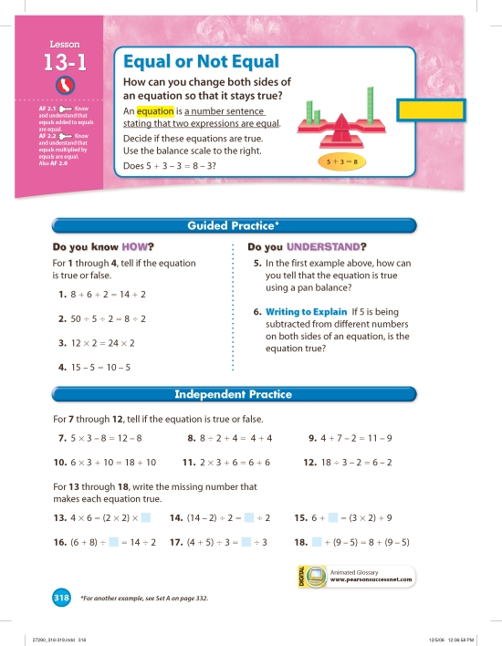
Page 318 from Envisions Math (0-328-27290-6) by Scott Foresman Addison Wesley
Sample Code:
(Show/Hide)
<level2>
<pagenum id="IDAEDAQ">318</pagenum>
<h2>Lesson 13-1: Equal or Not Equal</h2>
<img src="images/CA.png" alt="California icon" width="33"
height="30"/>
<p><strong>AF 2.1</strong> <img src="images/key.png"
alt="Key icon" width="22" height="13"/> Know and understand
that equals added to equals are equal.</p>
<p><strong>AF 2.2</strong> <img src="images/key.png"
alt="Key icon" width="22" height="13"/> Know and understand
that equals multiplied by equals are equal.</p>
<p>Also <strong>AF 2.0</strong></p>
<sidebar render="required">
<p>How can you change both sides of an equation so that it stays true?</p>
<p>An <dfn>equation</dfn> is a <em>number sentence stating that two
expressions are equal.</em></p>
<p>Decide if these equations are true. Use the balance scale to the right.</p>
<p>Does 5 + 3 - 8 = 8 - 3?</p>
<img src="images/p318-001.png" alt="Illustration of a scale, showing one
side with a stack of five blocks and a stack of three blocks, the other
side with a stack of eight blocks." width="1176" height="264"/>
</sidebar>
<level3>
<h3>Guided Practice<noteref idref="#p318">*</noteref></h3>
<level4>
<h4>Do you know how?</h4>
<p>For <strong>1</strong> through <strong>4</strong>,
tell if the equation is true or false.</p>
<list type="pl">
<li>1. 8 + 6 + 2 = 14 + 2</li>
<li>2. 50 ÷ 5 ÷ 2 = 8 ÷ 2</li>
<li>3. 12 × 2 = 24 × 2</li>
<li>4. 15 - 5 = 10 - 5</li>
</list>
</level4>
<level4>
<h4>Do you understand?</h4>
<list type="pl">
<li>5. In the first example above, how can you tell
that the equation is true using a pan balance?</li>
<li>6. <strong>Writing to Explain</strong> If 5 is
being subtracted from different numbers on both
sides of an equation, is the equation true?</li>
</list>
</level4>
</level3>
<level3>
<h3>Independent Practice</h3>
<p>For <strong>7</strong> through <strong>12</strong>, tell
if the equation is true or false.</p>
<list type="pl">
<li>7. 5 × 3 - 8 = 12 - 8</li>
<li>8. 8 ÷ 2 + 4 = 4 + 4</li>
<li>9. 4 + 7 - 2 = 11 - 9</li>
<li>10. 6 × 3 + 10 = 18 + 10</li>
<li>11. 2 × 3 + 6 = 6 + 6</li>
<li>12. 18 ÷ 3 - 2 = 6 - 2</li>
</list>
<p>For <strong>13</strong> through <strong>18</strong>, write
the missing number that makes each equation true.</p>
<list type="pl">
<li>13. 4 × 6 = (2 × 2) × ____</li>
<li>14. (14 - 2) ÷ 2 = ____ ÷ 2</li>
<li>15. 6 + ____ = (3 × 2) + 9</li>
<li>16. (6 + 8) ÷ ____ = 14 ÷ 2</li>
<li>17. (4 + 5) ÷ 3 = ____ ÷ 3</li>
<li>18. ____ + (9 - 5) = 8 + (9 - 5)</li>
</list>
<sidebar render="optional">
<img src="images/dig-a.png" alt="Digital Animated
Glossary icon" width="164" height="39"/>
<p>Animated Glossary www.pearsonsuccessnet.com</p>
</sidebar>
<note id="p318">
<p>* For another example, see Set A on page
332.</p>
</note>
<!-- ... -->
</level3>
</level2>
Illustrated Example 2
Page Sample:
(Show/Hide)
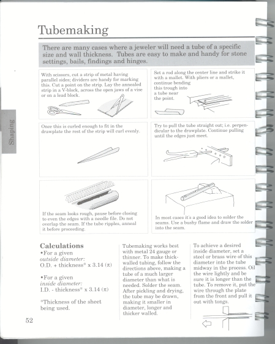
Page 52 from The Complete Metalsmith (0-87192-240-1) by Davis Publications
Sample Code:
(Show/Hide)
<level2>
<pagenum id="IDAKAKP">52</pagenum>
<h2>Tubemaking</h2>
<p>There are many cases where a jeweler will need a tube of a
specific size and wall thickness. Tubes are easy to make and
handy for stone settings, bails, findings and hinges.</p>
<list type="pl">
<li>With scissors, cut a strip of metal having parallel sides;
dividers are handy for marking this. Cut a point on the
strip. Lay the annealed strip in a V-block, across the
open jaws of a vise or on a lead block.
<img src="images/p052-001.png" alt="Scissors, strip of
metal and dividers."/>
</li>
<li>Set a rod along the center line and strike it with a
mallet. With pliers or a mallet, continue bending this
trough into a tube near the point.
<img src="images/p052-002.png" alt="Sheet of metal
and a rod"/>
</li>
<li>Once this is curled enough to fit in the drawplate the
rest of the strip will curl evenly.
<img src="images/p052-003.png" alt="Curled sheet of
metal"/>
</li>
<li>Try to pull the tube straight out; i.e. perpendicular to
the drawplate. Continue pulling until the edges just meet.
<img src="images/p052-004.png" alt="Pulling the tube
through the drawplate"/>
</li>
<li>If the seam looks rough, pause before closing to even the
edges with a needle file. Do not overlap the seam. If the
tube ripples, anneal it before proceeding.
<img src="images/p052-005.png" alt="Filing the rough
edges"/>
</li>
<li>In most cases it's a good idea to solder the seams. Use a
bushy flame and draw the solder into the seam.
<img src="images/p052-006.png" alt="Soldering the
seams of the sheet of metal"/>
</li>
</list>
<p>Tubemaking works best with metal 24 gauge or thinner. To make
thick-walled tubing, follow the directions above, making a
tube of a much larger diameter than what is needed. Solder
the seam. After pickling and drying, the tube may be drawn,
making it smaller in diameter, longer and thicker walled.</p>
<p>To achieve a desired inside diameter, set a steel or brass
wire of this diameter into the tube midway in the process.
Oil the wire lightly and be sure it is longer than the tube.
To remove it, put the wire through the plate from the front
and pull it out with tongs.</p>
<img src="images/p052-007.png" alt="Steel in the tube."/>
<level3>
<h3>Calculations</h3>
<list type="ul">
<li>For a given <em>outside diameter:</em> O.D. +
thickness<noteref idref="#p52">*</noteref> × 3.14 (π)
</li>
<li>For a given <em>inside diameter:</em> I.D. -
thickness<noteref idref="#p52">*</noteref> × 3.14 (π)
</li>
</list>
<note id="p52"><p>* Thickness of the sheet being used.</p></note>
<!-- ... -->
</level3>
</level2>
Illustrated Example 3
Page Sample:
(Show/Hide)
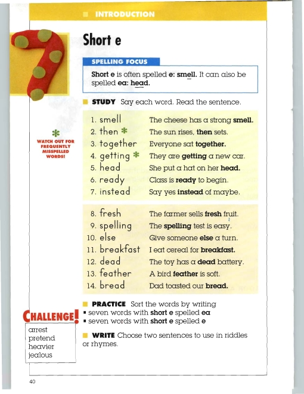
Page 40 from Everyday Spelling (0-328-22300-X) by Pearson Scott Foresman
Sample Code:
(Show/Hide)
<pagenum id="IDAZCKN">40</pagenum>
<level2>
<h2>7: Short e</h2>
<level3>
<h3>Introduction</h3>
<bridgehead>Spelling Focus</bridgehead>
<p><strong>Short e</strong> is often spelled <strong>e:
sm<em>e</em>ll.</strong> It can also be spelled
<strong>ea: h<em>ea</em>d.</strong></p>
<level4>
<h4>Study</h4>
<p>Say each word. Read the sentence.</p>
<list type="pl">
<li><lic>1. smell</lic> <lic>The cheese has a strong
<strong>smell.</strong></lic></li>
<li><lic>2. then<annoref idref="#anno_01">*</annoref>
</lic> <lic>The sun rises, <strong>then</strong> sets.
</lic></li>
<li><lic>3. together</lic> <lic>Everyone sat <strong>
together.</strong></lic></li>
<li><lic>4. getting<annoref idref="#anno_01">*</annoref>
</lic> <lic>They are <strong>getting</strong> a new car.
</lic></li>
<li><lic>5. head</lic> <lic>She put a hat on her <strong>
head.</strong></lic></li>
<li><lic>6. ready</lic> <lic>Class is <strong>ready
</strong> to begin.</lic></li>
<li><lic>7. instead</lic> <lic>Say yes <strong>instead
</strong>of maybe.</lic></li>
<li><lic>8. fresh</lic> <lic>The farmer sells <strong>
fresh</strong> fruit.</lic></li>
<li><lic>9. spelling</lic> <lic>The <strong>spelling
</strong> test is easy.</lic></li>
<li><lic>10. else</lic> <lic>Give someone <strong>else
</strong> a turn.</lic></li>
<li><lic>11. breakfast</lic> <lic>I eat cereal for
<strong>breakfast.</strong></lic></li>
<li><lic>12. dead</lic> <lic>The toy has a <strong>
dead</strong> battery.</lic></li>
<li><lic>13. feather</lic> <lic>A bird <strong>feather
</strong> is soft.</lic></li>
<li><lic>14. bread</lic> <lic>Dad toasted our <strong>
bread.</strong></lic></li>
</list>
<annotation id="anno_01">
<img src="images/thruout/laster.png" alt="Frequently
Misspelled Words icon" width="23" height="21"/>
<p>Watch Out for Frequently Misspelled Words!</p>
</annotation>
</level4>
<level4>
<h4>Practice</h4>
<p>Sort the words by writing</p>
<list type="pl">
<li>seven words with <strong>short e</strong> spelled
<strong>ea</strong></li>
<li>seven words with <strong>short e</strong> spelled
<strong>e</strong></li>
</list>
</level4>
<level4>
<h4>Write</h4>
<p>Choose two sentences to use in riddles or rhymes.</p>
<sidebar render="optional">
<hd>Challenge!</hd>
<list type="pl">
<li>arrest</li>
<li>pretend</li>
<li>heavier</li>
<li>jealous</li>
</list>
</sidebar>
<!-- ... -->
</level4>
</level3>
</level2>
Illustrated Example 4
Page Sample:
(Show/Hide)
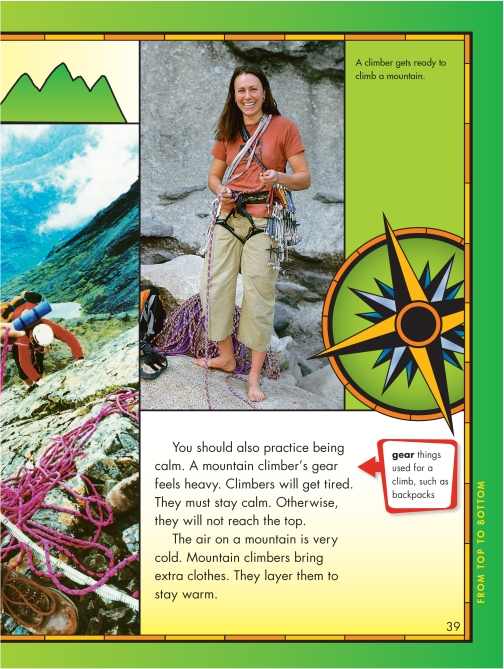
Page 39 from My Sidewalks on Reading Street (0-328-21489-2) by Pearson Scott Foresman
Sample Code:
(Show/Hide)
<pagenum id="IDA1BNO">39</pagenum>
<imggroup>
<caption>A climber gets ready to climb a mountain.</caption>
<img src="images/p039-001.png" alt="Two photographs, one looking down the side
of a mountain, the other of a young woman standing on a rock cliff, equipped
with gear." width="246" height="445"/>
</imggroup>
<p>You should also practice being calm. A mountain climber's
<annoref idref="#p39">gear</annoref> feels heavy. Climbers will
get tired. They must stay calm. Otherwise, they will not reach
the top.</p>
<p>The air on a mountain is very cold. Mountain climbers bring extra
clothes. They layer them to stay warm.</p>
<annotation id="p39">
<dl>
<dt>gear</dt>
<dd>things used for a climb, such as backpacks</dd>
</dl>
</annotation>
Information Object: Paragraph
Definition
The paragraph is the fundamental organizational unit for all prose texts. It is the most basic regular unit into which prose can be divided. Paragraphs have no firm internal structure but contain prose encoded as a mix of characters, entity references, phrases and embedded elements such as lists, figures or tables.
Bibliographic Reference
Markup
The paragraph is marked by the <p> tag, which surrounds the content of the paragraph.
Syntax
<p>
<em>...</em>
<strong>...</strong>
<dfn>...</dfn>
<code>...</code>
<samp>...</samp>
<kbd>...</kbd>
<cite>...</cite>
<abbr>...</abbr>
<acronym>...</acronym>
<a>...</a>
<img>...</img>
<imggroup>...</imggroup>
<br />
<q>...</q>
<sub>...</sub>
<sup>...</sup>
<span>...</span>
<bdo>...</bdo>
<sent>...</sent>
<w>...</w>
<pagenum>...</pagenum>
<prodnote>...</prodnote>
<annoref>...</annoref>
<noteref>...</noteref>
<list>...</list>
<dl>...</dl>
</p>
Examples
Example 1
<p>Of the kindness of Dr. Stephenson, he always spoke with the
greatest warmth of gratitude and affection.</p>
<p>After he had followed his studies at Edinburgh for four years,
on the breaking out of the Rebellion in 1745, he returned to Dumfries,
where he resided with Mr. McMurdo, his brother-in-law, in whose house
he was treated with kindness and affection; and had an opportunity,
from the society which it afforded, of considerably increasing the store of
his ideas. In 1746, he published a small collection of his poems, at
Glasgow.</p>
<p>After the close of the Rebellion, and the complete restoration
of the peace of the country, he returned to Edinburgh, and pursued his
studies there for six years longer.</p>
Illustrated Example 1
Page Sample:
(Show/Hide)
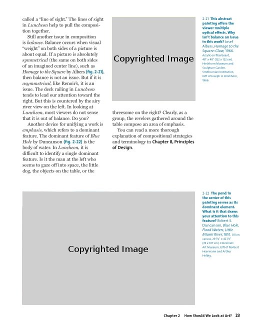
Page 23 from The Visual Experience (0-87192-627-X) by Davis Publications
Sample Code:
(Show/Hide)
<pagenum id="IDA53NN">23</pagenum>
<p class="block">called a "line of sight." The lines of sight in
<cite>Luncheon</cite> help to pull the composition together. </p>
<p class="indent">Still another issue in composition is
<em>balance.</em> Balance occurs when visual "weight" on both
sides of a picture is about equal. If a picture is absolutely
<em>symmetrical</em> (the same on both sides of an imagined
center line), such as <cite>Homage to the Square</cite> by Albers
<strong>(fig. 2-21),</strong> then balance is not an issue. But
if it is <em>asymmetrical,</em> like Renoir's, it is an issue.
The deck railing in <em>Luncheon</em> tends to lead our
attention toward the right. But this is countered by the airy
river view on the left. In looking at <em>Luncheon,</em> most
viewers do not sense that it is out of balance. Do you? </p>
<imggroup>
<img src="images/p023-001.png" alt="Josef Albers, Homage to
the Square: Glow" height="200" width="198"/>
<caption>2-21 <strong>This abstract painting offers the viewer
multiple optical effects. Why isn't balance an issue in this
work?</strong> Josef Albers, <em>Homage to the Square: Glow,
</em> 1966. Acrylic on fiberboard, 48" x 48" (122 x 122 cm).
Hirshhorn Museum and Sculpture Garden, Smithsonian Institution,
Gift of Joseph H. Hirshhorn, 1966.</caption>
</imggroup>
<p class="indent">Another device for unifying a work is <em>emphasis,
</em> which refers to a dominant feature. The dominant feature of
<cite>Blue Hole</cite> by Duncanson <strong>(fig. 2-22)</strong> is
the body of water. In <em>Luncheon,</em> it is difficult to
identify a single dominant feature. Is it the man at the left
who seems to gaze off into space, the little dog, the objects
on the table, or the threesome on the right? Clearly, as a group,
the revelers gathered around the table compose an area of
emphasis.</p>
<imggroup>
<img src="images/p023-002.png" alt="Robert S. Duncanson, Blue
Hole, Flood Waters, Little Miami River, 1851" width="415"
height="272"/>
<caption>2-22 <strong>The pond in the center of this painting
serves as its dominant element. What is it that draws your
attention to this feature?</strong> Robert S. Duncanson,
<em>Blue Hole, Flood Waters, Little Miami River,</em> 1851.
Oil on canvas, 29 1/4" x 42 1/4" (74 x 107 cm). Cincinnati Art
Museum, Gift of Norbert Heermann and Arthur Helbig.</caption>
</imggroup>
<p class="indent">You can read a more thorough explanation of
compositional strategies and terminology in <strong>Chapter 8,
Principles of Design.</strong></p>
Illustrated Example 2
Page Sample:
(Show/Hide)
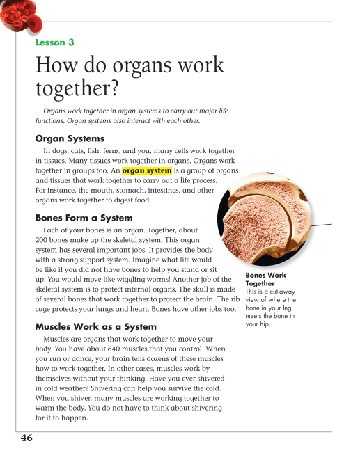
Page 46 from Science (0-328-34506-2) by Pearson Scott Foresman
Sample Code:
(Show/Hide)
<level3>
<pagenum id="IDASTRN">46</pagenum>
<h3>Lesson 3 How do organs work together?</h3>
<p><em>Organs work together in organ systems to carry out major
life functions. Organ systems also interact with each other.
</em></p>
<level4>
<h4>Organ Systems</h4>
<p>In dogs, cats, fish, ferns, and you, many cells work
together in tissues. Many tissues work together in organs.
Organs work together in groups too. An <dfn>organ
system</dfn> is a group of organs and tissues that work
together to carry out a life process. For instance, the
mouth, stomach, intestines, and other organs work together
to digest food.</p>
</level4>
<level4>
<h4>Bones Form a System</h4>
<p>Each of your bones is an organ. Together, about 200 bones
make up the skeletal system. This organ system has several
important jobs. It provides the body with a strong support
system. Imagine what life would be like if you did not
have bones to help you stand or sit up. You would move
like wiggling worms! Another job of the skeletal system is
to protect internal organs. The skull is made of several
bones that work together to protect the brain. The rib
cage protects your lungs and heart. Bones have other jobs
too.</p>
<imggroup>
<img src="images/U13C04/p046-001.png" alt="Bones"
width="480" height="776"/>
<caption><strong>Bones Work Together</strong><br />
This is a cut-away view of where the bone in your
leg meets the bone in your hip.</caption>
</imggroup>
</level4>
<level4>
<h4>Muscles Work as a System</h4>
<p>Muscles are organs that work together to move your body.
You have about 640 muscles that you control. When you run
or dance, your brain tells dozens of these muscles how to
work together. In other cases, muscles work by themselves
without your thinking. Have you ever shivered in cold
weather? Shivering can help you survive the cold. When you
shiver, many muscles are working together to warm the
body. You do not have to think about shivering for it to
happen.</p>
</level4>
</level3>
Information Object: Producer's Note
Definition
Information added to the DAISY DTB by the producing organization; commonly used to provide descriptions of visual elements such as charts, graphs, etc., supply operating instructions, or describe differences between the print book and the audio version. Traditionally, this has been called a transcriber's note, reader's note, or editor's note.
Bibliographic Reference
Markup
Producer's notes are marked with the <prodnote> tag and must be identified as "required" or "optional" using the "render" attribute. Optional producer's notes may be turned on or off by the end user; that is, the playback device or browser includes settings that either automatically play all producer's notes as they are encountered or play only those marked as "required." The producer must decide for each <prodnote> whether it contains critical information and is thus marked as "required" or merely contains helpful information that an end user could skip without harm.
A <prodnote> may contain bare text, inline or block level elements such as <p>.
The "showin" attribute can be used to control in which of three media types a given <prodnote> will be displayed. The allowable values for showin are xxx, xxp, xlx, xlp, bxx, bxp, blx, and blp, where x = inappropriate, b = braille, l = large print, and p = print. Thus the value "xlp" would prompt a player to display the prodnote in large print or print versions, but not in braille.
See Inline Elements: Information Object: Producer's Note for an example of <prodnote> used as an inline element.
Syntax
<prodnote render="...">
...
</prodnote>
New in the 2005 release of the DAISY Standard The "render" attribute is required, and must have a value of either "optional" or "required."
Examples
Example 1
<prodnote render="required">
The question below refers to a picture showing three glasses. The first
glass is 1/4 full, the second glass is 1/2 full and the third is 3/4 full.
</prodnote>
Example 2
<prodnote render="optional">
The map on this page shows all the cities in Europe with a population of more
than 100,000.
</prodnote>
Illustrated Example 1
Page Sample:
(Show/Hide)
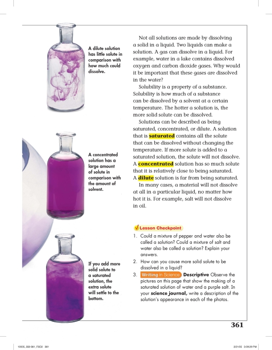
Page 361 from Science (0-328-10005-6) by Pearson Scott Foresman
Sample Code:
(Show/Hide)
<pagenum id="IDAIWLN">361</pagenum>
<imggroup>
<img src="images/U15C03/p361-001.png" alt="dilute solution"
width="110" height="236"/>
<prodnote render="optional">Photo of a glass bottle filled with a
clear solution, mixed with a small amount of a purple solution
that swirls through the clear solution.</prodnote>
<caption>A dilute solution has little solute in comparison with
how much could dissolve.</caption>
</imggroup>
<imggroup>
<img src="images/U15C03/p361-002.png" alt="concentrated solution"
width="105" height="231"/>
<prodnote render="optional">A glass bottle with a concentrated
purple solution that is the same dark purple all the way
through.</prodnote>
<caption>A concentrated solution has a large amount of
solute in comparison with the amount of solvent.</caption>
</imggroup>
<imggroup>
<img src="images/U15C03/p361-003.png" alt="saturated solution"
width="124" height="228"/>
<prodnote render="optional">A glass bottle with a concentrated
purple solution settling to the bottom of the bottle after
more purple solution has been added.</prodnote>
<caption>If you add more solid solute to a saturated solution,
the extra solute will settle to the bottom.</caption>
</imggroup>
<p>Not all solutions are made by dissolving a solid in a liquid. Two
liquids can make a solution. A gas can dissolve in a liquid. For
example, water in a lake contains dissolved oxygen and carbon
dioxide gases. Why would it be important that these gases are
dissolved in the water?</p>
<p>Solubility is a property of a substance. Solubility is how much of
a substance can be dissolved by a solvent at a certain
temperature. The hotter a solution is, the more solid solute can
be dissolved.</p>
<p>Solutions can be described as being saturated, concentrated, or
dilute. A solution that is <dfn>saturated</dfn> contains
all the solute that can be dissolved without changing the
temperature. If more solute is added to a saturated solution, the
solute will not dissolve. A <dfn>concentrated</dfn> solution
has so much solute that it is relatively close to being saturated.
A <dfn>dilute</dfn> solution is far from being saturated.</p>
<p>In many cases, a material will not dissolve at all in a particular
liquid, no matter how hot it is. For example, salt will not
dissolve in oil.</p>
<sidebar render="optional">
<hd>Lesson Checkpoint </hd>
<list type="pl">
<li>1. Could a mixture of pepper and water also be called a
solution? Could a mixture of salt and water also be called
a solution? Explain your answers.</li>
<li>2. How can you cause more solid solute to be dissolved in
a liquid?</li>
<li>3. <strong>Writing in Science - Descriptive</strong> Observe
the pictures on this page that show the making of a
saturated solution of water and a purple salt. In your
<dfn>science journal,</dfn> write a description of
the solution's appearance in each of the photos.</li>
</list>
</sidebar>
Illustrated Example 2
Page Sample:
(Show/Hide)
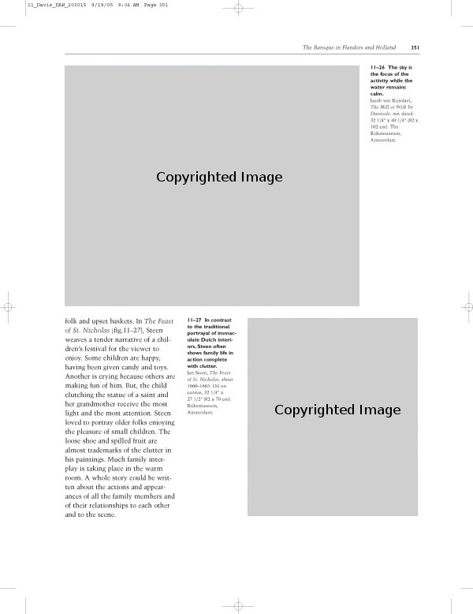
Page 351 from Discovering Art History (0-87192-719-5) by Davis Publications
Sample Code:
(Show/Hide)
<pagenum id="IDANRSN">351</pagenum>
<p>folk and upset baskets. In <em>The Feast of St. Nicholas</em>
(fig.11-27), Steen weaves a tender narrative of a children's
festival for the viewer to enjoy. Some children are happy, having
been given candy and toys. Another is crying because others are
making fun of him. But, the child clutching the statue of a saint
and her grandmother receive the most light and the most attention.
Steen loved to portray older folks enjoying the pleasure of small
children. The loose shoe and spilled fruit are almost trademarks
of the clutter in his paintings. Much family interplay is taking
place in the warm room. A whole story could be written about the
actions and appearances of all the family members and of their
relationships to each other and to the scene.</p>
<imggroup>
<img src="images/U16C04/p351-001.png" alt="Jacob van Ruisdael,
The Mill at Wijk by Durstede" width="447" height="366"/>
<prodnote render="optional">A painting by Jacob van Ruisdael
entitled The Mill at Wijk by Durstede. The painting is of a
riverscape with a ship in the water and a large windmill on
shore.</prodnote>
<caption><strong>11-26 The sky is the focus of the activity while
the water remains calm.</strong>
Jacob van Ruisdael, <cite>The Mill at Wijk by Durstede,</cite>
not dated. 32 1/4" - 40 1/4" (82 - 102 cm). The Rijksmuseum,
Amsterdam.</caption>
</imggroup>
<imggroup>
<img src="images/U16C04/p351-002.png" alt="Jan Steen, The Feast
of St. Nicholas" width="261" height="301"/>
<prodnote render="optional">A painting titled, The Feast of
St. Nicholas, by Jan Steen. The painting shows a family
gathered in a cluttered room with toys and food.</prodnote>
<caption><strong>11-27 In contrast to the traditional portrayal
of immaculate Dutch interiors, Steen often shows family life
in action complete with clutter.</strong>
Jan Steen, <cite>The Feast of St. Nicholas,</cite>
about 1660-1665. Oil on canvas, 32 1/4" - 27 1/2" (82 - 70
cm). Rijksmuseum, Amsterdam.</caption>
</imggroup>
Information Object: Quotation (Block Quotation)
Definition
A written passage drawn verbatim from another work, usually with the author credited. Longer quotations that are often set off from the surrounding text by paragraph breaks are called block quotations. Shorter quotations that are incorporated within a sentence or paragraph are called inline quotations (there is no block progression or direction regarding spacing). See Inline Elements: Information Object: Quotation.
Markup
Long quotations are marked with the <blockquote> tag. Quotations may be nested one inside the other. The optional cite attribute can include a URI to the source of the quotation.
Syntax
<blockquote>
<p>...</p>
<pagenum>...</pagenum>
</blockquote>
Examples
Example 1
<p>So you can imagine how Samson was brought up. Shrieks and wails if a razor
went near his head, and the whole community involved. Only, as soon as he was
grown into the biggest, strongest man around, he started causing trouble by bedding
and wedding Philistine girls, not his own kind, to the distress of Manoah and "the
woman" who now at least becomes "his mother" though she still never gets to have his
name.</p>
<blockquote>
<p>And she made him sleep upon her knees, and she called for a man,
and she caused him to shave off the seven locks of his head: and she began
to afflict him and the strength went from him.</p>
</blockquote>
The <author> tag can be used within <blockquote> to identify the author of the quotation.
Illustrated Example 1
Page Sample:
(Show/Hide)
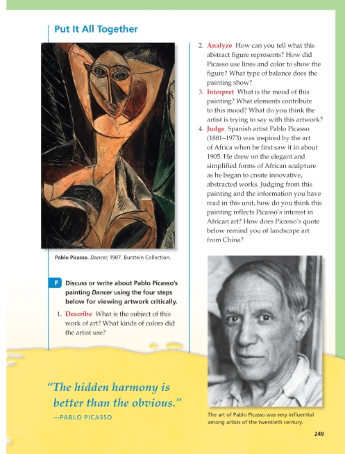
Page 249 from Art (0-328-080838-1) by Pearson Scott Foresman
Sample Code:
(Show/Hide)
<level3>
<pagenum id="IDANKCS">249</pagenum>
<h3>Put It All Together</h3>
<imggroup>
<img src="images/U14C13/p249-001.png" alt="Pablo Picasso.
Dancer, 1907." width="305" height="473"/>
<caption><strong>Pablo Picasso.</strong> <em>Dancer,</em>
1907. Burstein Collection.</caption>
</imggroup>
<p>F. Discuss or write about Pablo Picasso's painting Dancer
using the four steps below for viewing artwork critically.</p>
<list type="pl">
<li>1. <strong>Describe</strong> What is the subject
of this work of art? What kinds of colors did the
artist use?</li>
<li>2. <strong>Analyze</strong> How can you tell what
this abstract figure represents? How did Picasso
use lines and color to show the figure? What type
of balance does the painting show?</li>
<li>3. <strong>Interpret</strong> What is the mood of
this painting? What elements contribute to this
mood? What do you think the artist is trying to
say with this artwork?</li>
<li>4. <strong>Judge</strong> Spanish artist Pablo
Picasso (1881-1973) was inspired by the art of
Africa when he first saw it in about 1905. He drew
on the elegant and simplified forms of African
sculpture as he began to create innovative,
abstracted works. Judging from this painting and
the information you have read in this unit, how
do you think this painting reflects Picasso's
interest in African art? How does Picasso's quote
below remind you of landscape art from China?</li>
</list>
<blockquote>
<p><em>"The hidden harmony is better than the obvious."</em>
</p>
<author>Pablo Picasso</author>
</blockquote>
<imggroup>
<img src="images/U14C13/p249-002.png" alt="Pablo Picasso"
width="263" height="347"/>
<caption>The art of Pablo Picasso was very influential among
artists of the twentieth century.</caption>
</imggroup>
</level3>
Illustrated Example 2
Page Sample:
(Show/Hide)
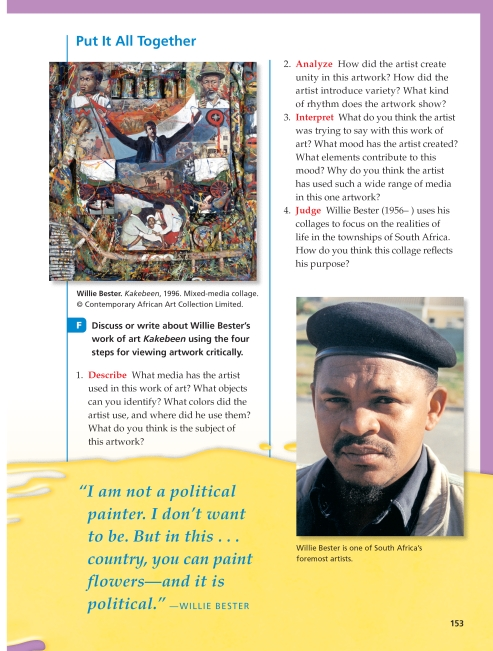
Page 153 from Art (0-328-08038-1) by Pearson Scott Foresman
Sample Code:
(Show/Hide)
<level3><h3>Put It All Together</h3>
<pagenum id="IDA4S3Q">153</pagenum>
<imggroup>
<img src="images/U12C14/p153-001.png" alt="Willie Bester.
Kakebeen, 1996." width="329" height="347"/>
<caption><strong>Willie Bester.</strong><em>Kakebeen,</em>
1996. Mixed-media collage. © Contemporary African Art
Collection Limited.</caption>
</imggroup>
<p>F. Discuss or write about Willie Bester's work of art Kakebeen
using the four steps for viewing artwork critically.</p>
<list type="pl">
<li>1. Describe What media has the artist used in this work
of art? What objects can you identify? What colors did
the artist use, and where did he use them? What do you
think is the subject of this artwork?</li>
<li>2. Analyze How did the artist create unity in this
artwork? How did the artist introduce variety? What kind
of rhythm does the artwork show?</li>
<li>3. Interpret What do you think the artist was trying to
say with this work of art? What mood has the artist
created? What elements contribute to this mood? Why do
you think the artist has used such a wide range of media
in this one artwork? </li>
<li>4. Judge Willie Bester (1956- ) uses his collages to focus
on the realities of life in the townships of South Africa.
How do you think this collage reflects his purpose?</li>
</list>
<imggroup>
<img src="images/U12C14/p153-002.png" width="266" height="381"
alt="Willie Bester"/>
<caption>Willie Bester is one of South Africa's foremost
artists.</caption>
</imggroup>
<blockquote>
<p><em>"I am not a political painter. I don't want to be. But
in this . . . country, you can paint flowers-and it is
political."</em> </p>
<author>Willie Bester</author>
</blockquote>
</level3>
Information Object: Sample
Definition
A sample of work created by the author used as an example or template within the text.
Markup
Items that the author has placed in the text as sample work or examples to follow should be marked with the <samp> tag. This tag can be used in either block or inline settings.
Syntax
<samp>...</samp>
Examples
Example 1
<p>When writing a business letter, it is a good idea to use block letter
style as shown below.</p>
<samp>
1234 University Ave.
Missoula, MT 59801
Bill Gates
1234 Somewhere Ln.
Seattle, WA 98034
Dear Mr. Gates,
......
</samp>
Example 2
<p>You may use a form like the one below to request a credit report from your bank.</p>
<samp>
First Name:________________________ Middle Initial:_______
Last Name:___________________________
Address:_______________________________________________________
City:______________________ State:_______ Zip:________________
Social Security Number:____________________________
Bank Name:____________________________________
...
</samp>
See also Information Object: Computer Code and Information Object: Keyboard Input
Illustrated Example 1
Page Sample:
(Show/Hide)
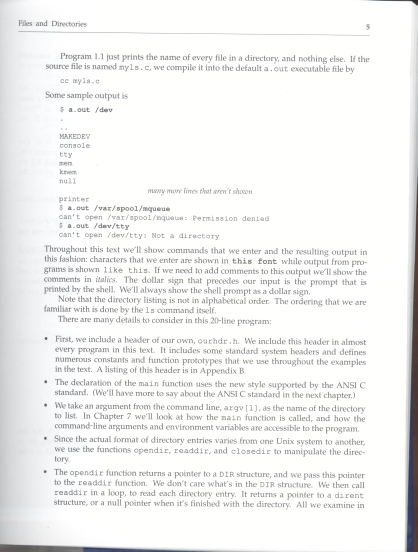
Page 5 from Advanced Programming in the UNIX Environment (0-201-56317-7) by Addison-Wesley
Sample Code:
(Show/Hide)
<pagenum id="igubjk">5</pagenum>
<p>Program 1.1 just prints the name of every file in a directory, and
nothing else. If the source file is named myls.c, we compile it
into the default a.out executable file by </p>
<kbd>cc myls.c</kbd>
<p>Some sample output is</p>
<samp class="output">
$ <kbd>a.out /dev</kbd><br/>
.<br/>
..<br/>
MAKEDEV<br/>
console<br/>
tty<br/>
mem<br/>
kmem<br/>
null<br/>
</samp>
<p><em>many more lines that aren't shown</em></p>
<samp class="output">
printer<br/>
$ <kbd>a.out /var/spool/mqueue</kbd><br/>
can't open /var/spool/mqueue: Permission denied<br/>
$ <kbd>a.out /dev/tty</kbd><br/>
can't open /dev/tty: Not a directory<br/>
</samp>
<p>Throughout this text we'll show commands that we enter and the
resulting output in this fashion: characters that we enter are
shown in <kbd>this font</kbd> while output from
programs is shown <span class="output">like this</span>. If we
need to add comments to this output we'll show the comments in
<em>italics</em>. The dollar sign that precedes our input is the
prompt that is printed by the shell. We'll always show the shell
prompt as a dollar sign.</p>
<p>Note that the directory listing is not in alphabetical order. The
ordering that we are familiar with is done by the <kbd>ls</kbd>
command itself.</p>
<p>There are many details to consider in this 20-line program:</p>
<list type="ul">
<li>First, we include a header of our own, <span class="mono">
ourhdr.h</span>. We include this header in almost every
program in this text. It includes some standard system headers
and defines numerous constants and function prototypes that
we use throughout the examples in the text. A listing of this
header is in Appendix B. </li>
<li>The declaration of the main function uses the new style
supported by the ANSI C standard. (We'll have more to say
about the ANSI C standard in the next chapter.)</li>
<li>We take an argument from the command line, <span class="mono">
argv[1]</span>, as the name of the directory to list. In
Chapter 7 we'll look at how the <span class="mono">main</span>
function is called, and how the command-line arguments and
environment variables are accessible to the program. </li>
<li>Since the actual format of directory entries varies from one
Unix system to another, we use the functions <span
class="mono">opendir, readdir</span>, and <span class="mono">
closedir</span> to manipulate the directory.</li>
<li>The <span class="mono">opendir</span> function returns a
pointer to a <span class="mono">DIR</span> structure, and we
pass this pointer to the <span class="mono">readdir</span>
function. We don't care what's in the <span class="mono">DIR
</span> structure. We then call <span class="mono">readdir
</span> in a loop, to read each directory entry. It returns a
pointer to a <span class="mono">dirent</span> structure, or a
null pointer when it's finished with the directory. All we
examine in</li>
</list>
Playback devices can be configured so that text tagged as <samp> will preserve all white space (line breaks, indentation, etc.).
Information Object: Notice
New in the 2005 release of the DAISY Standard The <notice> element has been removed from the DTD and the content model.
Definition
A sidebar contains information supplementary to the main text and/or narrative flow that is positioned as if boxed and floating separate from the main text block. Sidebars may include a heading, followed by paragraphs, lists and other block-oriented elements. For sidebars of this type, use the attribute render="optional".
The <sidebar> tag may also be used to mark warnings, cautions, etc., that must not be skipped by the end user. When it is essential that a sidebar be read by an user, add the attribute render="required".
Bibliographic Reference
Syntax
<sidebar render="...">
<hd>...</hd>
<p>...</p>
</sidebar>
New in the 2005 release of the DAISY Standard
The "render" attribute is required, and must have a value of either "optional" or "required."
Examples
Example 1
<sidebar render="required">Danger: Never crawl under a car that is supported solely
by a jack.</sidebar>
<p>To loosen the muffler, first jack up the car and put blocks under the frame...</p>
Example 2
<h2>Chocolate Stars</h2>
<list type="ul" class="ingredients">
<li>4 ounces cold unsalted butter</li>
<li>1/2 cup sugar</li>
<li>1/2 teaspoon vanilla extract</li>
</list>
<!-- ... -->
<sidebar render="optional">
<hd>Cocoa Powder News</hd>
<p>Amy uses a "full Dutch" process cocoa called "Jersey cocoa" that has 22 to 24 per
cent fat and is available through the San Francisco based cookware chain
Williams-Sonoma.</p>
</sidebar>
Comments and Alternative NIMAS Examples:
(Show/Hide)<address>is a NIMAS-optional element.While the use of optional tags is recommended, if one is only using the required tag set, the above section might be formatted as follows:
<p>CPO Focus on Life Science</p> <p>First Edition</p> <p>Copyright © 2007 Delta Education LLC, a member of the School Specialty Family</p> <p>ISBN-10: 1-58892-253-7</p> <p>ISBN-13: 978-1-58892-253-3</p> <p>2 3 4 5 6 7 8 9 - QWE- 11 10 09 08 07</p> <p>All rights reserved. No part of this work may be reproduced or transmitted in any form or by any means, electronic or mechanical, including photocopying and recording, or by any information storage or retrieval system, without permission in writing. For permission and other rights under this copyright, please contact:</p> <line>CPO Science</line> <line>80 Northwest Boulevard</line> <line>Nashua, New Hampshire 03063</line> <line>(866)588-6951</line> <line>http://www.cposcience.com</line> <p>Printed and Bound in the United States of America</p>